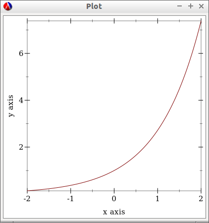
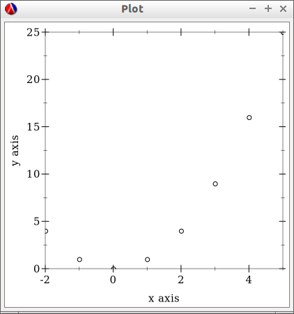
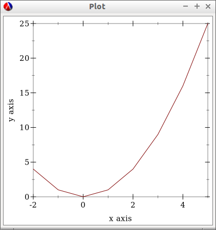
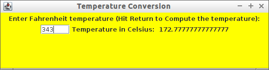

Scheme
Table of Contents
- 1. Scheme
- 1.1. Overview
- 1.2. Basic Syntax
- 1.2.1. Name Conventions
- 1.2.2. Syntax
- 1.2.3. Data Types
- 1.2.4. Variables
- 1.2.5. Functions
- 1.2.5.1. Defining and applying functions
- 1.2.5.2. Anonymous Functions/ Lambda Functions
- 1.2.5.3. Functions with Control Structure
- 1.2.5.4. Variadic Function
- 1.2.5.5. Recursive Functions
- 1.2.5.6. Internal Definition
- 1.2.5.7. Arithmetic
- 1.2.5.8. Comparison
- 1.2.5.9. Math Functions
- 1.2.5.10. String Functions
- 1.2.6. List Operations
- 1.3. Higher Order Functions
- 1.4. Lazy Evaluation / Delayed Evaluation
- 1.5. Object Orientated Programming
- 1.6. Metaprogramming
- 1.7. S-expressions and Serialization
- 1.8. Debugging
- 1.9. SCIP
- 1.10. Applications
- 1.11. Scheme Implementations
- 1.12. Resources
- 1.12.1. Books
- 1.12.2. Community
- 1.12.3. Articles
- 1.12.4. Blogs, Workshops, Conferences
- 1.12.5. University Courses
- 1.12.6. Repositories
- 1.12.7. Misc
- 1.12.8. Documentation by Subject
- 1.12.8.1. Manual
- 1.12.8.2. Libraries and Standards
- 1.12.8.3. Syntax
- 1.12.8.4. Object Orientated Programming
- 1.12.8.5. Macros and Metaprogramming
- 1.12.8.6. Serialization and Data Representation
- 1.12.8.7. Scheme as Extension Language
- 1.12.8.8. Algebraic Data Types - Monads, Monoids
- 1.12.8.9. Continuation
- 1.12.8.10. Compilation
- 1.12.9. Hacker News Threads
- 1.12.10. Lambda Ultimate Threads
1 Scheme
1.1 Overview
1.1.1 Why Lisp
- Lisp is used as embedded script language in many products
- Autocad -> Autolisp
- GNUCash -> GNU Guile Scheme
- GIMP Editor -> GNU Guile Scheme
Products that use lisp:
- Emacs -> Emacs Lisp, A lisp dialect based on Common Lisp
- GNU Maxima -> Cumputer Algebra System (CAS), Common Lisp
1.1.2 Scheme Features
- Learn the principles of programming languages
- Meta programming
- Lisp dialect that endorses Functional Programming
- Lightweight extension language or embedded language
- Scheme is used as extension language of softwares like GIMP and GnuCash
- Scheme can be used to test JVM and .NET API in the REPL.
- Google App Engine Uses Kawa scheme which is a implementations for the JVM.
1.1.3 Scheme Implementations
| Implementation | Feature |
|---|---|
| MIT Scheme | Classical Scheme Implementation used by SCIP |
| Kawa | Scheme for the JVM - Java API access. Compiles to the JVM |
| Iron Scheme | Scheme for .NET platform - .NET API Acess |
| GNU Guile | Used as embedded extension language for many apps like GIMP, GNUCash, GEDA |
| Chicken | Compiles to Native Code, produces portable C code, package manager |
| Gambit-C + Lambda Native | Compiles to IOS, Android, Linux, Windows … |
| Chibi Scheme | Minimal Scheme Implementation for use as an Extension Language |
| BiwaScheme | Scheme implemented in Javascript. It can run in the browser, client side. |
| Racket | IDE Dr Scheme. and Debugger. Superset of scheme, not fully compatible. |
| Scsh | Scsh is an open-source Unix shell embedded within Scheme, running on all |
| major Unix platforms including AIX, Cygwin, Linux, FreeBSD, GNU Hurd, HP-UX, | |
| Irix, Mac OS X, Solaris, and some others |
See also:
1.2 Basic Syntax
1.2.1 Name Conventions
| Terminology | Description | Name Convention | Example |
|---|---|---|---|
| Procedure | functions | ||
| Predicate | Function that returns a boolean, true (#t) or false (#f) | Ends with ? | zero? null? |
| Getter | Function that returns a value from a Lisp object | Ends with -ref | list-ref |
| Setter | Function that sets a value in a Lisp object | Ends with ! | set! |
| Constructor | A constructor is a function that creates a Lisp object. | ||
| Converter | Function that converts one type of Lisp object into another type | (from type)->(to-type) | symbol->string, number->string |
| Iteration (SCIP book) | Tail Recursion |
1.2.2 Syntax
Scheme uses prefix notation, or polish notation. Every operator like +,-,* is a function.
Function Application
(<function> <arg1> <arg2> <arg3> ...) ;; 1 + 2 + 3 + 4 + 5 > (+ 1 2 3 4 5) $1 = 15 ;; 1 * 2 * 3 * 4 * 5 > (* 1 2 3 4 5) $2 = 120 > (/ 1 2 3 4 5) $3 = 1/120 > (sqrt 100) $8 = 10
Special Forms
Special forms are statements that are not functions like if, then, else, begin, define …
(<special form> <arg1> <arg2> <arg3> ...)
- define
Bind a name to a value or function (procedure).
(define <name> <value>) (define (<function-name> arg1 arg2 ...) (<body>)) > (define x 10) > x $9 = 10 > (define sqrt2 (sqrt 2)) > sqrt2 $10 = 1.4142135623730951 > (define (f x y) (+ x y)) > f $12 = #<procedure f (x y)> > (f 3 4) $11 = 7 > (define f (lambda (x y) (+ x y))) > (f 3 4) $54 = 7
- lambda
(lambda (arg1 arg2 ...) (<body>)) > (lambda (x y) (+ x y)) $52 = #<procedure 9077370 at <current input>:463:0 (x y)> > ((lambda (x y) (+ x y)) 3 4) $53 = 7
- if then else
(if <condition> <then statement>) (if <condition> <then statement> <else statement>) > (if (zero? 4) "zero" "not zero") $5 = "not zero" > (if (zero? 4) "zero") > (if (zero? 0) "zero") $7 = "zero"
- cond
(cond (<condition 1> <action1>) (<condition 2> <action12) ... (else <action else>)) ;; Optional > (define x 10) > x $15 = 10 > (cond ((zero? x) "is zero") ((< x 3) "Less than 3") ((< x 5) "Less than 5") ((< x 9) "Less than 9") (else "Greater or equal 9")) $16 = "Greater or equal 9" ;;; Returns nothing ;; (define x 100) > (cond ((zero? x) "is zero") ((< x 3) "Less than 3") ((< x 5) "Less than 5") ((< x 9) "Less than 9")) >
- begin
The begin statement is used to execute multiple s-expressions.
(begin <action1> <action2> ...) > (begin (display 10) (display "dummy") (newline)) 10dummy
- quote or (') tick.
Don't evaluate a lisp expression, returns the list of symbols, numbers and atoms that forms the list, or in other words, any lisp expression is just a list.
(quote <expression>) Or '(<epxression>) > '(exp 3.0) $11 = (exp 3.0) > (quote (exp 3.0)) $12 = (exp 3.0) ;;; GNU Guile > (eval '(exp 3.0) (interaction-environment)) $15 = 20.08553692318766 ;;; (eval (quote (exp 3.0)) (interaction-environment)) $16 = 20.085536923187668 > '(1 2 3 4 5) $13 = (1 2 3 4 5) > (quote (1 2 3 4 5)) $14 = (1 2 3 4 5) ;;; However not all list can be evaluated > (eval '(1 2 3 4 5) (interaction-environment)) ERROR: In procedure 1: ERROR: Wrong type to apply: 1
Important Functions
- load
Load a scheme source code in the REPL.
(load "<filename.scm>") (load "tools.scm")
- eval
Eval evaluates a quoted lis expression, its arguments depends on the scheme implementation. It is better to use macros rather than eval. It is necessary to remember that "eval is evil" since it can allow untrusted code execute arbitrary commands so it must be used with care.
Note: In some scheme implementations [] square brackets can be used instead of parenthesis to make the code more readable.
;; (eval <s-expression> <argument>) ;;;; MIT - Scheme ;; ;; $ rlwrap -c --remember scheme 1 ]=> (define s '((lambda (x y) (+ (* 2 x) (* 3 y))) 3 4)) ;Value: s 1 ]=> s ;Value 17: ((lambda (x y) (+ (* 2 x) (* 3 y))) 3 4 1 ]=> (eval s (the-environment)) ;Value: 18 ;;;; GNU Guile ;; ;; $ rlwrap -c --remember guile > [define s '([lambda (x y) (+ (* 2 x) (* 3 y))] 3 4)] scheme@(guile-user)> > s $1 = ((lambda (x y) (+ (* 2 x) (* 3 y))) 3 4) > (eval s (interaction-environment)) $2 = 18 ;;;; Chicken Scheme ;; ;; $ rlwrap -c --remember csi > [define s '([lambda (x y) (+ (* 2 x) (* 3 y))] 3 4)] > s ((lambda (x y) (+ (* 2 x) (* 3 y))) 3 4) > > (eval s) 18 ;;;; Kawa Scheme ;; ;; $ rlwrap -c --remember java -jar kawa-2.0.jar #|kawa:6|# (define s '((lambda (x y) (+ (* 2 x) (* 3 y))) 3 4)) #|kawa:7|# s ((lambda (x y) (+ (* 2 x) (* 3 y))) 3 4) #|kawa:8|# #|kawa:10|# (eval s) 18
1.2.3 Data Types
1.2.3.1 Basic Data Types
Booleans
;;; Boolean ;; ;;--------------------------------- 1 ]=> #f ;Value: #f 1 ]=> #t ;Value: #t
Number
1 ]=> 12323 ;Value: 12323 1 ]=> 123.232 ;Value: 123.232 ;;;;; Complex Number 1 ]=> 10+4i ;Value: 10+4i 1 ]=> (+ 10+4i 5-3i) ;Value: 15+i 1 ]=> (+ 10+4i 100) ;Value: 110+4i 1 ]=> (sqrt 10+4i) ;Value: 3.2226021794715067+.6206164734636876i
String
1 ]=> "hello world scheme" ;Value 15: "hello world scheme"
Characters
> #\a $93 = #\a > #\A $94 = #\A scheme@(guile-user) [20]> > #\( $95 = #\( scheme@(guile-user) [20]> > #\) $96 = #\) scheme@(guile-user) [20]> > #\space $97 = #\space scheme@(guile-user) [20]> > #\tab $98 = #\tab scheme@(guile-user) [20]> > #\return $99 = #\return scheme@(guile-user) [20]>
Symbol
1 ]=> 'mysymbol ;Value: mysymbol 1 ]=> (quote mysymbol) ;Value: mysymbol
List
Scheme lists are linked lists with sequential access to any element.
1 ]=> '(23.23 1000 40 50 102) ;Value 16: (23.23 1000 40 50 102 ;; List of Strings ;; ;;--------------------------------- 1 ]=> '( "hello" "world" "scheme") ;Value 17: ("hello" "world" "scheme") ;; List of Symbols ;; ;;--------------------------------- 1 ]=> '(hello world scheme) ;Value 18: (hello world scheme) 1 ]=> (quote (hello world symbols)) ;Value 31: (hello world symbols) ;; S-expression ;;--------------------------------- 1 ]=> '(+ 10 2) ;Value 19: (+ 10 2) 1 ]=> (quote (+ (sin 0.4) (cos 0.01))) ;Value 32: (+ (sin .4) (cos .01)) 1 ]=> (quote (1 2 3 4 5 6)) ;Value 33: (1 2 3 4 5 6)
Vector
Vectors are equivalent to C-arrays, are linear data structures of fixed size with random access to any element.
1 ]=> #(a b c d e) ;Value 11: #(a b c d e) 1 ]=> (vector-ref #(a b c d e) 0) ;Value: a 1 ]=> (vector-ref #(a b c d e) 4) ;Value: e
1.2.3.2 Type Predicates
Scheme is dynamic typed language therefore there is not guarantee about the variable type or the function type signature. The types can be checked with the following predicates.
| Predicate | Returns true for |
|---|---|
| boolean? | Boolean |
| string? | Strings |
| number? | Number, integer, real or complex numbers |
| integer? | Integer numbers |
| real? | Real numbers 2.232 1e3 100 |
| complex? | Complex numbers 100+45i |
| symbol? | Symbols |
| list? | Lists |
| vector? | Vectors |
| procedure? | Procedure or function |
(boolean? #f) ;Value: #t 1 ]=> (boolean? 100) ;Value: #f 1 ]=> (symbol? "x") ;Value: #f 1 ]=> (symbol? 'x) ;Value: #t 1 ]=> (integer? 100) ;Value: #t 1 ]=> (integer? 3.232) ;Value: #f 1 ]=> (real? 3232) ;Value: #t 1 ]=> (real? 3232.232) ;Value: #t 1 ]=> (string? "hello world Scheme Lisp") ;Value: #t 1 ]=> (string? 100232) ;Value: #f 1 ]=> (list? '(1 2 3 5 6)) ;Value: #t 1 ]=> (list? 2323) ;Value: #f 1 ]=> (procedure? sin) ;Value: #t 1 ]=> (procedure? 2323) ;Value: #f (define atom? (lambda (x) (and (not (pair? x)) (not (null? x)))))
1.2.3.3 Type Conversion
;;-------------------------------------;; 1 ]=> (string->number "20e3") ;Value: 20000. 1 ]=> (string->number "10.23") ;Value: 10.23 1 ]=> 1 ]=> (number->string 100) ;Value 11: "100" 1 ]=> (number->string -100.23e3) ;Value 12: "-100230." 1 ]=> ;;-------------------------------------;; 1 ]=> (symbol->string 'sin) ;Value 13: "sin" 1 ]=> (string->symbol "my-symbol") ;Value: my-symbol 1 ]=> (symbol->string 'some-symbol) ;Value 14: "some-symbol" ;;-------------------------------------;;
1.2.4 Variables
1.2.4.1 Global Variable
1 ]=> (define g 9.81) ;Value: g 1 ]=> g ;Value: 9.81 1 ]=> (define (speed v0 t) (+ (* g t) v0)) ;Value: speed 1 ]=> (speed 3 2.4) ;Value: 26.544
1.2.4.2 Local Variable
- let
(let ( (x 10) (y 20) (f (lambda (a) (* a 10))) ) (f (+ x y)) ) ;Value: 300 1 ]=> x ;Unbound variable: x 1 ]=> y ;Unbound variable: y 1 ]=> f ;Unbound variable: f
- let*
The keyword let* is equivalent to a nested let.
$ rlwrap -c --remember csi CHICKEN (c) 2008-2015, The CHICKEN Team (c) 2000-2007, Felix L. Winkelmann Version 4.10.0 (rev b259631) linux-unix-gnu-x86 [ manyargs dload ptables ] compiled 2015-08-04 on yves.more-magic.net (Linux) ;;;; This code won't work. > (let ( (x 10) (y (+ x 40)) (z (* y x)) (f (lambda (a) (* a 3))) ) (f (+ x y z)) ) Error: unbound variable: x ;;; This code will, however there is a lot of boilerplate nesteds let > (let ((x 10)) (let ((y (+ x 40))) (let ( (z (* y x)) (f (lambda (a) (* a 3)))) (f (+ x y z))))) 1680 > ;;;; let* > (let* ( (x 10) (y (+ x 40)) (z (* y x)) (f (lambda (a) (* a 3))) ) (f (+ x y z)) ) 1680
- letrec
Letrec allows to implement loops or loops with recursive anonymous functions.
Example1:
(define (displayln x) (begin (display x) (display "\n"))) (letrec [(loop (lambda (i) (if (< i 10) (begin (displayln i) (loop (+ i 1))))))] (loop 0)) 0 1 2 3 4 5 6 7 8 9 > loop Error: unbound variable: loop
Example2: Loop over a list and find the sum of all elements:
(define alist '(1 2 3 4 5 6)) (letrec [(loop (lambda (xs) (if (null? xs) 0 (+ (car xs) (loop (cdr xs))))))] (loop alist)) 21
1.2.5 Functions
1.2.5.1 Defining and applying functions
In Scheme functions are first class, they can be passed as arguments to other functions and be returned from another functions, in other words, functions are data.
]=> (define (f x) (* x 10)) ;Value: f ]=> f ;Value 11: #[compound-procedure 11 f] ]=> (f 10) ;Value: 100 ;; Map a function over a list ;;;; ]=> (map f '(1 2 3 4 5 6)) ;Value 12: (10 20 30 40 50 60) ;; Define a function of multiple variables ;;;;; ]=> (define (fxy x y) (+ (* 4 x) (* 3 y))) ;Value: fxy ]=> (fxy 3 5) ;Value: 27 ;; Map a fucntion multiple variables over alist ;;;; ]=> (map (lambda (y) (fxy 3 y)) '(1 2 3 4 5 6)) ;Value 14: (15 18 21 24 27 30) ;; Apply a list as function argument ;;;;; 1 ]=> (apply fxy '( 5 6)) ;Value: 38 ;; Transforms a function f into a new function that accepts ;; a list of arguments ;; ;;;;;;; 1 ]=> (define (currify f) (lambda (x) (apply f x))) ;Value: currify 1 ]=> (define fxy_c (currify fxy)) ;Value: fxy_c 1 ]=> (fxy_c '( 3 4)) ;Value: 24 1 ]=> (fxy_c '( 5 6)) ;Value: 38 1 ]=> 1 ]=> (map fxy_c (list '(5 6) '(3 7) '(8 9) '( 1 5))) ;Value 29: (38 33 59 19) ;;; OR 1 ]=> (map (currify fxy) (list '(5 6) '(3 7) '(8 9) '( 1 5))) ;Value 30: (38 33 59 19)
1.2.5.2 Anonymous Functions/ Lambda Functions
Anonymous functions are useful to pass functions as arguments to other functions, callbacks and connect one function to another.
1 ]=> (lambda (x) (+ (* x 4) 10)) ;Value 31: #[compound-procedure 31] 1 ]=> ((lambda (x) (+ (* x 4) 10)) 10) ;Value: 50 1 ]=> (map (lambda (x) (+ (* x 4) 10)) '(10 20 30 40 50)) ;Value 32: (50 90 130 170 210) 1 ]=> (define f (lambda (x) (+ (* x 4) 10))) ;Value: f 1 ]=> f ;Value 33: #[compound-procedure 33 f] 1 ]=> (map f '(10 20 30 40 50)) ;Value 34: (50 90 130 170 210) ;; Scheme is a Functional Programming Language, ;; so it can return functions from functions that ;; can be used to define curried functions ;; 1 ]=> (define (addxy x y) (lambda (x) (lambda (y) (+ x y)))) ;Value: addxy 1 ]=> ((addxy 10) 20) ;Value: 30 1 ]=> (define add10 (addxy 10)) ;Value: add10 1 ]=> (add10 20) ;Value: 30 1 ]=> 1 ]=> (map (addxy 10) '(10 20 30 40 50 60)) ;Value 37: (20 30 40 50 60 70)
1.2.5.3 Functions with Control Structure
(define (sign x) (cond ((> x 0) 1) ((= x 0) 0) ((< x 0) -1) )) 1 ]=> (sign -10) $49 = -1 1 ]=> (sign 100) $50 = 1 1 ]=> (sign 0) $51 = 0 (define (absolute x) (cond ((>= x 0) x) ((< x 0) (- x)) )) 1 ]=> (absolute -10) $52 = 10 1 ]=> (absolute 10) $53 = 10 1 ]=> (absolute 0) $54 = 0 (define (absolute2 x) (cond ((> x 0) x ) (else (- x)) )) 1 ]=> (map absolute2 '(-10 -9 0 1 2 3)) $57 = (10 9 0 1 2 3)
1.2.5.4 Variadic Function
Function of many arguments
1 ]=> (define (variadic-fun . args) args) 1 ]=> (variadic-fun 10 20 30 40 50 100) $55 = (10 20 30 40 50 100) (define (variadic2 . args) (- (apply * args) (apply + args))) ;; (- (* 10 20 30) (+ 10 20 30)) ;; (- 6000 60) ;; 5940 ;; 1 ]=> (variadic2 10 20 30) $56 = 5940
1.2.5.5 Recursive Functions
(define (fib n) (cond ((= n 0) 1) ((= n 1) 1) (else (+ (fib (- n 1)) (fib (- n 2)))))) scheme@(guile-user)> (fib 1) $6 = 1 scheme@(guile-user)> (fib 5) $7 = 8 scheme@(guile-user)> (fib 15) $8 = 987 scheme@(guile-user)> (fib 20) $9 = 10946 scheme@(guile-user)> (fib 30) $10 = 1346269 (define (fib-aux n a b) (if (or (= n 0) (= n 1)) b (fib-aux (- n 1) b (+ a b)))) (define (fib-fast n) (fib-aux n 1 1)) > (fib-aux 30 1 1) $4 = 1346269 > (fib-aux 40 1 1) $5 = 165580141 > (fib-aux 100 1 1) $6 = 573147844013817084101 > (fib-fast 30) $9 = 1346269 > (fib-fast 130) $10 = 1066340417491710595814572169 >
1.2.5.6 Internal Definition
(define (f x y) (define a 10) (define (f1 x) (+ (* x 2) 4)) (define (f2 i) (+ i 1)) (+ (f1 x) (f2 y) a)) ;; ;; (+ (f1 3) (f2 4) 10)) ;; (+ (+ (* 3 2) 4))) (+ 4 1) 10) ;; (+ 10 5 10) ;; 25 ;; scheme@(guile-user) [2]> (f 3 4) $12 = 25 scheme@(guile-user) [2]> (f 2 3) $13 = 22 scheme@(guile-user) [4]> f1 ;;; <unknown-location>: warning: possibly unbound variable `f1' scheme@(guile-user) [2]> a ;;; <unknown-location>: scheme@(guile-user) [3]> f2 ;;; <unknown-location>: warning: possibly unbound variable `f2'
1.2.5.7 Arithmetic
The Scheme operators are functions of two arguments and are written in the infix notation, also known as polish notation.
$ rlwrap scheme MIT/GNU Scheme running under GNU/Linux Type `^C' (control-C) followed by `H' to obtain information about interrupts. Copyright (C) 2011 Massachusetts Institute of Technology This is free software; see the source for copying conditions. There is NO warranty; not even for MERCHANTABILITY or FITNESS FOR A PARTICULAR PURPOSE. Image saved on Tuesday October 22, 2013 at 12:31:09 PM Release 9.1.1 || Microcode 15.3 || Runtime 15.7 || SF 4.41 || LIAR/i386 4.118 Edwin 3.116 ]=> ]=> (+ 10 20 ) ;Value: 30 ]=> (+ 1 2 3 4 5 6) ;Value: 21 ]=> (* 3 5) ;Value: 15 ]=> (* 1 2 3 4 5 6) ;Value: 720 ]=> (/ 10 20) ;Value: 1/2 ]=> (/ 10.0 20.0) ;Value: .5 1 ]=> (/ 29 3) ;Value: 29/3 1 ]=> (/ 29 3 7) ;Value: 29/21 1 ]=> (/ 29 3 7 2) ;Value: 29/42 1 ]=> (exact->inexact (/ 29 3 7 2)) ;Value: .6904761904761905 ;;; 10 - 20 ]=> (- 10 20) ;Value: -10 ]=> ;;; 3 * 4 + 8 / 4 + (-3) * 5 ;; 1 ]=> (+ (* 3 4) (/ 8 4) (* -3 5)) ;Value: -1
1.2.5.8 Comparison
Equality Operators
| Operator | Description | Use |
|---|---|---|
| = | Numerical Equality | (= 10 10) |
| eqv? | Test if non numeric values are equal | (= 'sym1 'sym1) |
| eq? | Check if the two objects represents the same location in memory | The return value depends on implementation. |
| equal? | Structural Equality | (= (list 'a 'b 10) (list 'a 'b 10)) |
$ rlwrap -c --remember csi CHICKEN (c) 2008-2015, The CHICKEN Team (c) 2000-2007, Felix L. Winkelmann Version 4.10.0 (rev b259631) linux-unix-gnu-x86 [ manyargs dload ptables ] compiled 2015-08-04 on yves.more-magic.net (Linux) ;; Numerical Equality ;; ;;-------------------------------- > (= 'symbol1 'symbol2) Error: (=) bad argument type: symbol1 (= 100 100) #t > (= 10 1) #f > ;; ;; eq? ;; ;; Cannot compare lists and strings ;; ;;-------------------------------- > (eq? 'a-symbol 'a-symbol) #t > (eq? 'a-symbol 'a-symb) #f > > (eq? 10 10) #t > (eq? 10 10.0) #f > (eq? 10.0 10.0) #f > > (eq? 10 "hello") > (eq? "hello" "hello") #f > > (eq? (list 1 "string" 'symbol1) (list 1 "string" 'symbol1)) #f > > (eq? '() '()) #t > ;; ;; eqv? ;; ;; It is preferable to use eqv? instead of eq? ;;------------------------------- > (eqv? 'symbol1 'symbol1) #t > > (eqv? 10.0 10.0) #t > > (eqv? '() '()) #t > > (eqv? "hello" "hello") #f > > (eqv? (list 1 "string" 'symbol1) (list 1 "string" 'symbol1)) #f > ;; ;; equal? ;; ;; Structural equality. ;;------------------------------- (= (list 1 "string" 'symbol1) (list "string" 'symbol1)) Error: (=) bad argument type: (1 "string" symbol1) ;; Recursively compare every element of a list ;; > (equal? (list 1 "string" 'symbol1) (list 1 "string" 'symbol1)) #t > > (equal? "hello" "hello") #t >
Comparison Operators
;;; Comparison Operators ]=> (> 10 200) ;Value: #f ]=> (= 10 10) ;Value: #t ]=> (< 10 200) ;Value: #t ]=> ]=> (<= 10 20) ;Value: #t ]=> (>= 10 20) ;Value: #f ]=> (>= 10 10) ;Value: #t ]=>
Logical Operators
1 ]=> (not #t) ;Value: #f 1 ]=> (not #f) ;Value: #t 1 ]=> 1 ]=> (and #f #t) ;Value: #f 1 ]=> (and #t #t) ;Value: #t 1 ]=> (or #t #t) ;Value: #t 1 ]=> (or #t #f) ;Value: #t
1.2.5.9 Math Functions
1 ]=> (sqrt 10) ;Value: 3.1622776601683795 1 ]=> (sqrt 100) ;Value: 10 1 ]=> (map sqrt '(4 9 16 25 36)) $44 = (2.0000000929222947 3.00009155413138 4.000000636692939 5.000023178253949 6.000000005333189) ;;======================================== ;;; x ^ y ;; ;; 1 ]=> (expt 2 2) $40 = 4 1 ]=> (expt 2 3) $41 = 8 (map (lambda (x) (expt 2 x)) '(2 3 4 5 6 7 8)) $42 = (4 8 16 32 64 128 256) ;;======================================== 1 ]=> (exp 1.0) ;Value: 2.718281828459045 1 ]=> (map exp '(-2 -1 0 1 2 3)) ;Value 20: (.1353352832366127 .36787944117144233 1 2.718281828459045 7.38905609893065 20.08553692318767) 1 ]=> (log 10) ;Value: 2.302585092994046 1 ]=> (log (exp 1)) ;Value: 1. 1 ]=> (define (logbase base) (lambda (x) (/ (log x) (log base)))) ;Value: logbase 1 ]=> (logbase 10) ;Value 21: #[compound-procedure 21] 1 ]=> ((logbase 10) 10) ;Value: 1. 1 ]=> ((logbase 10) 100) ;Value: 2. 1 ]=> 1 ]=> (define log10 (logbase 10)) ;Value: log10 1 ]=> (log10 1000) ;Value: 2.9999999999999996 1 ]=> (map log10 '(0.01 1.0 10.0 100.0)) ;Value 22: (-1.9999999999999996 0. 1. 2.) ;;;;;;;;;;;;;;;;;;;;;;;;;;;;;;;;; ;;; Trigonometric Functions ;; Create PI constant 1 ]=> (define pi (* 4 (atan 1.0))) ;Value: pi 1 ]=> pi ;Value: 3.141592653589793 1 ]=> (define (rad2deg rad) (* (/ rad pi) 180)) ;Value: rad2deg 1 ]=> (rad2deg pi) ;Value: 180. 1 ]=> 1 ]=> (define (deg2rad deg) (* (/ deg 180) pi)) ;Value: deg2rad 1 ]=> (deg2rad 180) ;Value: 3.141592653589793 ;; ;; Transforms a function that accepts angle in radians to a function ;; that accepts a angle in degrees 1 ]=> (define (make-deg-func func) (lambda (deg) (func (deg2rad deg)))) ;Value: make-deg-func 1 ]=> (define sind (make-deg-func sin)) ;Value: sind 1 ]=> (sind 60) ;Value: .8660254037844386 1 ]=> (sind 30) ;Value: .49999999999999994 1 ]=> (sind 90) ;Value: 1. 1 ]=> (define cosd (make-deg-func cos)) ;Value: cosd 1 ]=> (map cosd '(0 30 60 90 180)) ;Value 23: (1 .8660254037844387 .5000000000000001 6.123233995736766e-17 -1.) ;;; Inverse Trigonometric Functions 1 ]=> (asin 0.5) ;Value: .523598775598298 1 ]=> (atan 1) ;Value: .7853981633974483 1 ]=> (define (make-inv-deg-func func) (lambda (x) (rad2deg (func x)))) ;Value: make-inv-deg-func 1 ]=> ((make-inv-deg-func atan) 1) ;Value: 45. 1 ]=> (define atand (make-inv-deg-func atan)) ;Value: atand 1 ]=> (atand 1.0) ;Value: 45. 1 ]=> (map atand '(0.0 0.5 1.0 2.0 1e10)) ;Value 26: (0. 26.565051177077986 45. 63.43494882292201 89.99999999427042) ;;==================================;; 1 ]=> (abs -10) $46 = 10 1 ]=> (abs 100) $47 = 100 1 ]=> (abs 0) $48 = 0
1.2.5.10 String Functions
Predicates
;;;; Test if is String 1 ]=> (string? "scheme") ;Value: #t 1 ]=> (string? 1000) ;Value: #f ;;; Test is String is null, empty 1 ]=> (string-null? "") ;Value: #t 1 ]=> (string-null? "scheme") ;Value: #f ;;;; Test if String starts with prefix 1 ]=> (string-prefix? "example" "example-11232.x") ;Value: #t 1 ]=> (string-prefix? "example" "11232.x") ;Value: #f ;;;; Test if String ends with suffix 1 ]=> (string-suffix? "class" "machine.class") ;Value: #t 1 ]=> (string-suffix? "class" "machine.dex") ;Value: #f
Misc
;;;; String Construction 1 ]=> (make-string 10 #\x) ;Value 21: "xxxxxxxxxx" 1 ]=> (make-string 20 #\a) ;Value 22: "aaaaaaaaaaaaaaaaaaaa 1 ]=> (string #\s #\c #\h #\e #\m #\e) ;Value 23: "scheme" ;;;; Length of a String 1 ]=> (string-length "1234567890") ;Value: 10 ;;;; Trim String 1 ]=> (string-trim " \n\nlisp\n scheme \n\n") ;Value 18: "lisp\n scheme" 1 ]=> (string-trim-left " \n\nlisp\n scheme \n\n") ;Value 19: "lisp\n scheme \n\n" 1 ]=> (string-trim-right " \n\nlisp\n scheme \n\n") ;Value 20: " \n\nlisp\n scheme" 1 ]=> ;;;; Append Strings 1 ]=> (string-append "hello " "world" " scheme" " lisp ") ;Value 25: "hello world scheme lisp " ;;; Split String ;; ;; Not defined in MIT-Scheme, but defined in ;; Chicken Scheme (csi Repl), GNU Guile and others. ;; > (string-split "hello world") ("hello" "world") > (string-split "hello:world" ":") ("hello" "world")
To String
1 ]=> (number->string 12.323) ;Value 11: "12.323" 1 ]=> (symbol->string 'asymbol) ;Value 12: "asymbol" 1 ]=> 1 ]=> (list->string '(#\h #\e #\l #\l #\o #\space #\w #\o #\r #\l #\d)) ;Value 16: "hello world"
From String
1 ]=> (string->number "222.23") ;Value: 222.23 1 ]=> (string->symbol "asymbol") ;Value: asymbol ;;; To list of characters ;; 1 ]=> (string->list "hello world") ;Value 15: (#\h #\e #\l #\l #\o #\space #\w #\o #\r #\l #\d) 1 ]=> (char->integer #\x) ;Value: 120 1 ]=> (map char->integer (string->list "lisp")) ;Value 28: (108 105 115 112)
1.2.6 List Operations
1.2.6.1 Defining a List
;;; A scheme list can hold arbitrary values > '(1 2.23 1e3 hello world lisp (2 5 "a string")) $55 = (1 2.23 1000.0 hello world lisp (2 5 "a string")) ;;; List of Symbols > '(a b c d e) $56 = (a b c d e) ;;; List with values (define x 1) (define y 2) (define z 10) (define w 'a-symbol) (define z 'theta) > (list x y z w) $61 = (1 2 theta a-symbol) (list 'x x 'y y 'z z 'w w) $62 = (x 1 y 2 z theta w a-symbol) > (list (cons 'x x) (cons 'y y) (cons 'z z)) $66 = ((x . 1) (y . 2) (z . theta))
1.2.6.2 Quasiquote
;;;;;;;;;;;;;;;;;;;;;;;;;;;;;;;;;;;;;;;;;;;;;;;;;;; ;;; Lists with Quasiquotes > `(the product of 3 and 4 is ,(* 3 4)) $106 = (the product of 3 and 4 is 12) > `("the product of 3 and 4 is" ,(* 3 4)) $107 = ("the product of 3 and 4 is" 12) (define xs '(1 2 3)) (define ys '(a b c)) > `(x ,x y ,y z ,z) $69 = (x 1 y 2 z theta) > `( (x ,x) (y ,y) (z ,z)) $71 = ((x 1) (y 2) (z theta)) > `( (x ,x) (y ,y) (z ,z) ,@xs) $72 = ((x 1) (y 2) (z theta) 1 2 3) > `( (x ,x) (y ,y) (z ,z) ,@xs ,@ys) $73 = ((x 1) (y 2) (z theta) 1 2 3 a b c) > `( (x ,x) (y ,y) (z ,z) (xs ,@xs) (ys ,@ys)) $74 = ((x 1) (y 2) (z theta) (xs 1 2 3) (ys a b c)) > `( (x ,x) (y ,y) (z ,z) (xs ,xs) (ys ,ys)) $92 = ((x 1) (y 2) (z theta) (xs (1 2 3)) (ys (a b c))) > `(x ,x y ,y ,(if (> 2 x) w z)) $77 = (x 1 y 2 a-symbol) > `(x ,x y ,y ,(if (< 2 x) w z)) $78 = (x 1 y 2 theta) > `(x ,x y ,y ,(if (< 2 x) `(w ,w) `(z ,z))) $79 = (x 1 y 2 (z theta)) > `(x ,x y ,y ,(if (> 5 x) `(w ,w) `(z ,z))) $80 = (x 1 y 2 (w a-symbol)) > `(x ,x y ,y (if (> 5 x) (w ,w) (z ,z))) $82 = (x 1 y 2 (if (> 5 x) (w a-symbol) (z theta))) (list (cons 'f1 f1) (cons 'f2 f2) (cons 'f3 f3)) $83 = ((f1 . #<procedure f1 (x)>) (f2 . #<procedure f2 (x)>) (f3 . #<procedure f3 (x)>)) ;;;;;;;;;;;;;;;;;;;;;;;;;;;;;;;;;;;;;;;;;;;;;;;;;;;;; ;;; List of functions ;;; (define (f1 x) (* 2 x)) (define (f2 x) (+ x 5)) (define (f3 x) (+ 2 (* 6 x))) (define (call-with x) (lambda (f) (f x))) > (list f1 f2 f3) $64 = (#<procedure f1 (x)> #<procedure f2 (x)> #<procedure f3 (x)>) > (map (call-with 5) (list f1 f2 f3)) $65 = (10 10 32) > (list (cons 'f1 f1) (cons 'f2 f2) (cons 'f3 f3)) $83 = ((f1 . #<procedure f1 (x)>) (f2 . #<procedure f2 (x)>) (f3 . #<procedure f3 (x)>)) > (cdr (assoc 'f1 (list (cons 'f1 f1) (cons 'f2 f2) (cons 'f3 f3)))) $85 = #<procedure f1 (x) > (cdr (assoc 'f2 (list (cons 'f1 f1) (cons 'f2 f2) (cons 'f3 f3)))) $86 = #<procedure f2 (x)> > ((cdr (assoc 'f2 (list (cons 'f1 f1) (cons 'f2 f2) (cons 'f3 f3)))) 10) $88 = 15 > (define (f-dispatch key arg) ((cdr (assoc key (list (cons 'f1 f1) (cons 'f2 f2) (cons 'f3 f3)))) arg)) > (f-dispatch 'f1 5) $89 = 10 > (f-dispatch 'f2 5) $90 = 10 > (f-dispatch 'f3 5) $91 = 32 ;;;;;;;;;;;;;;;;;;;;;;;;;;;;;;;;;;;;;;;;;;;;;;;;;;;;; ;; Lisp programs are list of symbols numbers and strings ;; > '(+ 1 2 3 4 5) $75 = (+ 1 2 3 4 5) ;;; GNU Guile ;; > (eval '(+ 1 2 3 4 5) (interaction-environment)) $76 = 15
1.2.6.3 Primitive List Operations
- Nil - Empty List '()
- Cons - List constructor, Construct a list cell
> (define Nil '()) ;Value: nil > Nil ;Value: () > (Cons 5 Nil) ;Value 19: (5) > (Cons 5 (Cons 6 Nil)) ;Value 20: (5 6) > (Cons 4 (Cons 5 (Cons 6 Nil))) ;Value 21: (4 5 6)
- car - It selects the first element, "head" of a list cell
> (car (list 1 2 3 4)) ;Value: 1 > (car '(2 3 4)) ;Value: 2 > (car '(x y z)) ;Value: x
- cdr - It selects the "tail" of a list, removes the first element
> (cdr (list 1 2 3 4)) ;Value 17: (2 3 4) > (cdr '(x y z w)) ;Value 18: (y z w)
- caddr - It gets the second element of a list
> (cadr '(a b c d e f)) $14 = b >
- caddr - It gets the third element of a list
> (caddr '(a b c d e f)) $16 = c
- cadddr - It gets the forth element of alist.
> (cadddr '(a b c d e f)) $17 = d
- cddr - Removes the first two elements of a list.
> (cddr '(a b c d e f)) $3 = (c d e f)
- cdddr - Removes the first three elements of a list.
> (cadddr '(a b c d e f)) $4 = d
| Function | Output | Description |
|---|---|---|
(car '[a b c) |
a | First element |
(cadr '[a b c d e f]) |
b | Second element |
(caddr '[a b c d e f]) |
c | Third element |
(cadddr '[a b c d e f]) |
d | Forth element |
(caddddr '[a b c d e f]) |
e | Fifth element |
(cdr '[a b c e f) |
='(b c e f)= | Remove first, tail |
(cddr '[a b c e f) |
='(c e f)= | Remove first two elements |
(cdddr '[a b c e f) |
='(e f)= | Remove first three elements |
(cddddr '[a b c e f) |
='(f)= | Remove first four elements |
1.2.6.4 Basic List Functions
1 ]=> (length '(1 2 3 4 5 6)) ;Value: 6 1 ]=> (reverse '(1 2 3 4 5 6)) ;Value 27: (6 5 4 3 2 1) 1 ]=> (append '(1 2 3 4) '(5 6 7) '(8 9 10)) ;Value 28: (1 2 3 4 5 6 7 8 9 10) ;; Test if list is empty ;; 1 ]=> (null? '(1 2 3 4 5 6)) ;Value: #f 1 ]=> (null? '()) ;Value: #t ;;; Test if a value is member of a list 1 ]=> (member 'y '(x y z w)) ;Value 24: (y z w) 1 ]=> (member 'a '(x y z w)) ;Value: #f 1 ]=> (member 'x '(x y z w)) ;Value 25: (x y z w) 1 ]=> (member 'k '(x y z w)) ;Value: #f ;;;; Reverse a list 1 ]=> (reverse '(x y z w)) ;Value 26: (w z y x ;;; First and Last Element 1 ]=> (first '(x y z w)) ;Value: x 1 ]=> (last '(x y z w)) ;Value: w ;;; Pick the nth element of a list 1 ]=> (list-ref '(x y z w) 0) ;Value: x 1 ]=> (list-ref '(x y z w) 1) ;Value: y 1 ]=> (list-ref '(x y z w) 2)
1.3 Higher Order Functions
All the functions defined are in the file: hof_functions.scm that can be loaded in scheme by typing:
$ curl -O https://raw.githubusercontent.com/caiorss/Functional-Programming/master/scheme/src/hof_functions.scm $ rlwrap -c --remember scheme 1 ]=> (load "hof_functions.scm")
1.3.1 Buit-in Functions
Fundamental higher order functions defined in Scheme.
- map
> (map [lambda (x) (+ x 4)] '(1 2 3 4 5 6)) (5 6 7 8 9 10) > (map [lambda (x y) (+ x y)] '(1 2 3 4) '(2 3 4 5)) (3 5 7 9) > (map [lambda (x y z) (+ x y z)] '(1 2 3 4) '(2 3 4 5) '(9 18 10 20)) (12 23 17 29) > (define (hypot a b) [sqrt (+ (* a a) (* b b))]) > (hypot 4 3) 5.0 > (map hypot '(1 3 4) '(2 6 8)) (2.23606797749979 6.70820393249937 8.94427190999916)
- for-each
Similar to map, however it used for functions with side effects.
;;; Using map (map [lambda (x) (display x) (newline)] '(1 2 3 4)) 1 2 3 4 (#<unspecified> #<unspecified> #<unspecified> #<unspecified>) > (for-each [lambda (x) (display x) (newline)] '(1 2 3 4)) 1 2 3 4 > (for-each [lambda (a b) (display a) (display b) (newline)] '(a b c d) '(1 2 3 4)) a1 b2 c3 d4
- apply
Apply a function to a list of arguments.
(define (hypot3d a b c) [sqrt (+ (* a a) (* b b) (* c c) )]) > (hypot3d 3 4 5) 7.07106781186548 > (apply hypot3d '(3 4 5)) 7.07106781186548 > (define (map-apply f list-of-args) (map (lambda (x) (apply f x)) list-of-args)) > (map-apply hypot3d '( (1 2 3) (3 4 5) (6 7 8))) (3.74165738677394 7.07106781186548 12.2065556157337)
1.3.2 Special Functions
;;; Constant function - Will return a, ;; regardless the value of x ;; (define (constant a) (lambda (x) a)) (define (id x) x) 1 ]=> (id 10) ;Value: 10 1 ]=> (map id '(1 2 3 4 6)) ;Value 11: (1 2 3 4 6) 1 ]=> ((constant 10) 20) ;Value: 10 1 ]=> ((constant 10) 2000) ;Value: 10 1 ]=> (define f (constant 10)) ;Value: f 1 ]=> f ;Value 12: #[compound-procedure 12] 1 ]=> (f 45) ;Value: 10 1 ]=> (f 100) ;Value: 10 1 ]=> (map (constant 5) '(1 2 3 4 5 6)) ;Value 13: (5 5 5 5 5 5)
1.3.3 Functions Composition
Basic Function Composition
1 ]=> (define (compose f g) (lambda (x) (f (g x)))) ;Value: compose ;; Foward Composition 1 ]=> (define (fcompose f g) (lambda (x) (g (f x)))) ;Value: fcompose ;;;;;;;;;;;;;;;;;;;;;;;;;; 1 ]=> (define pi (* 4 (atan 1.0))) ;Value: pi 1 ]=> pi ;Value: 3.141592653589793 1 ]=> (define (deg2rad deg) (* (/ deg 180) pi)) ;Value: deg2rad 1 ]=> (define sind (compose sin deg2rad)) 1 ]=> (map sind '(0 45 60 90 180 270)) ;Value 13: (0 .7071067811865475 .8660254037844386 1. 1.2246467991473532e-16 -1.) ;;--------------- 1 ]=> (define sind (fcompose deg2rad sin)) ;Value: sind 1 ]=> (map sind '(0 45 60 90 180 270)) ;Value 15: (0 .7071067811865475 .8660254037844386 1. 1.2246467991473532e-16 -1.)
Composition of a List of Functions
(define (__compose-funcs list-of-functions x) (if (null? list-of-functions) x (__compose-funcs (cdr list-of-functions) ((car list-of-functions) x)) )) (define (compose-funcs . list-of-functions) (lambda (x)(__compose-funcs list-of-functions x))) ;;;------------------------------;;; 1 ]=> ((compose-funcs log exp sin asin) 0.60) ;Value: .6000000000000001 1 ]=> (define sind (compose-funcs deg2rad sin)) ;Value: sind 1 ]=> (sind 30) ;Value: .49999999999999994 1 ]=> (sind 90) ;Value: 1.
1.3.4 Partial Application and Currying
1.3.4.1 Partial Application
(define (partial fun . args) (lambda x (apply fun (append args x)))) 1 ]=> (define (f x y z) (+ (* 3 x) (* 2 y) (* -2 z))) ;Value: f 1 ]=> (f 2 3 4) ;Value: 4 1 ]=> ((partial f 1) 2 3) ;Value: 1 1 ]=> ((partial f 1 2) 3) ;Value: 1 1 ]=> (map (partial f 1 2) '(1 2 3 4 5 6)) ;; ;Value 23: (5 3 1 -1 -3 -5)
1.3.5 Applying Multiple Functions to a Single Argument
Returns a functions that takes a list of functions and applies it to a single value.
(define (juxt . fxs) (lambda (x) (map (lambda (f) (f x)) fxs))) 1 ]=> ((juxt sqrt exp log) 3.0) ;Value 20: (1.7320508075688772 20.08553692318767 1.0986122886681098) 1 ]=> (define f (juxt sqrt exp log)) ;Value: f 1 ]=> (f 3) ;Value 21: (1.7320508075688772 20.08553692318767 1.0986122886681098) (map f '(1 2 3)) ;Value 23: ((1 2.718281828459045 0) (1.4142135623730951 7.38905609893065 .6931471805599453) (1.7320508075688772 20.08553692318767 1.0986122886681098))
1.3.5.1 Currying
;;;;; Currying Transformations ;; Turn a non curried function into a curried function ;; (define (curry2 f) (lambda (x) (lambda (y) (f x y)))) (define (curry3 f) (lambda (x) (lambda (y) (lambda (z) (f x y z))))) (define (curry4 f) (lambda (x) (lambda (y) (lambda (z) (lambda (w) (f x y z w)))))) 1 ]=> (define (mul x y) (* x y)) ;Value: mul 1 ]=> (mul 3 4) ;Value: 12 1 ]=> (((curry2 mul) 3) 4) ;Value: 12 1 ]=> (define mul3 ((curry2 mul) 3)) ;Value: mul3 1 ]=> (mul3 4) ;Value: 12 1 ]=> (map mul3 '(1 2 3 4 5 6)) ;Value 24: (3 6 9 12 15 18) 1 ]=> ;;-------------------------- (define (f x y z) (+ (* 3 x) (* 2 y) (* -2 z))) 1 ]=> (define cf (curry3 f)) ;Value: cf 1 ]=> (((cf 1) 2) 3) ;Value: 1 1 ]=> (map ((cf 1) 2) '( 1 2 3 4 5)) ;Value 27: (5 3 1 -1 -3)
1.3.6 Miscellaneous
Replicate N times a value
(define (replicate n x) (if (zero? n) ;; Then '() ;; Else (cons x (replicate (- n 1) x)) ) );; End of replicate 1 ]=> (replicate 4 0) $12 = (0 0 0 0) 1 ]=> (replicate 8 "abc") $13 = ("abc" "abc" "abc" "abc" "abc" "abc" "abc" "abc") 1 ]=> (replicate 3 'symbol) $15 = (symbol symbol symbol)
Cycle
(define (cycle_aux n xs acc) (if (zero? n) ;;(or (zero? n) (null? xs)) ;; Then '() ;; Else (if (null? xs) (cycle_aux (- n 1) acc acc) (cons (car xs) (cycle_aux (- n 1) (cdr xs) acc)) ) );; End if );; End of cycle_aux 1 ]=> (cycle_aux 10 '(1 2 3) '(1 2 3)) $16 = (1 2 3 1 2 3 1 2) 1 ]=> (cycle_aux 20 '(1 2 3) '(1 2 3)) $17 = (1 2 3 1 2 3 1 2 3 1 2 3 1 2 3) (define (cycle n xs) (cycle_aux n xs xs)) 1 ]=> (cycle 10 '(a b c)) $18 = (a b c a b c a b) 1 ]=> (cycle 20 '(0 1)) $19 = (0 1 0 1 0 1 0 1 0 1 0 1 0 1)
Intersperse
(define (intersperse a xs) (if (null? xs) '() [cons (car xs) (if (null? (cdr xs)) (cdr xs) (cons a (intersperse a (cdr xs))))])) > (intersperse 'x '(1 2 3 4 5)) (1 x 2 x 3 x 4 x 5) > (intersperse '(x y) '(1 2 3 4 5)) (1 (x y) 2 (x y) 3 (x y) 4 (x y) 5)
Mapi
Similar to Ocaml function mapi, map a function of index and value each index and element of a list.
(define (mapi func lst) (define (mapi_acc acc lst idx) (if (null? lst) acc (mapi_acc (cons (func idx (car lst)) acc) (cdr lst) (+ idx 1 )))) (reverse (mapi_acc '() lst 0))) (define (f_i_a i a) (list i a)) > (mapi f_i_a '(a b c d e f)) '((0 a) (1 b) (2 c) (3 d) (4 e) (5 f)) >
Count Number of Elements
(define (count-list alist) (if (null? alist) 0 (+ 1 (count-list (cdr alist))))) ;Value: count-list 1 ]=> (count-list '()) ;Value: 0 1 ]=> (count-list '(8 91 293 23)) ;Value: 4 1 ]=> (count-list '(20 2932 1923 129 12 535 22)) ;Value: 7
Sum of list elements
(define (sum-list alist) (if (null? alist) 0 (+ (car alist) (sum-list (cdr alist))))) 1 ]=> (sum-list '(1 2 3 4 5 6 )) ;Value: 21
Find Element in a List
(define (find predicate alist) (if (null? alist) (error "Error: Predicate not found") (if (predicate (car alist)) (car alist) (find predicate (cdr alist))))) 1 ]=> (find (lambda (x) (< x 10)) '( 20 40 8 9 100 50 7)) ;Value: 8 1 ]=> (find (lambda (x) (> x 50)) '( 20 40 8 9 100 50 7)) ;Value: 100 1 ]=> (find (lambda (x) (> x 500)) '( 20 40 8 9 100 50 7)) ;Error: Predicate not found ;To continue, call RESTART with an option number: ; (RESTART 1) => Return to read-eval-print level 1. 2 error>
Drop / Take n elements
(define (take n alist) (if (or (null? alist) (= n 0)) '() (cons (car alist) (take (- n 1) (cdr alist))))) 1 ]=> (take 10 '()) ;Value: () 1 ]=> (take 3 '(1 2 3 4 5 6 )) ;Value 17: (1 2 3) 1 ]=> (take 4 '(1 2 3 4 5 6 )) ;Value 18: (1 2 3 4) 1 ]=> (take 100 '(1 2 3 4 5 6 )) ;Value 19: (1 2 3 4 5 6) 1 ]=> (define (drop n alist) (if (or (null? alist) (= n 0)) alist (drop (- n 1) (cdr alist)))) 1 ]=> (drop 3 '(1 2 3 4 5 6 )) ;Value 20: (4 5 6) 1 ]=> (drop 5 '(1 2 3 4 5 6 )) ;Value 21: (6) 1 ]=> (drop 15 '(1 2 3 4 5 6 )) ;Value: () 1 ]=> (drop 15 '()) ;Value: () 1 ]=>
Take while and Drop While
(define (take_while predicate alist) (if (or (null? alist) (not (predicate (car alist)))) '() (cons (car alist) (take_while predicate (cdr alist))))) 1 ]=> (take_while (lambda (x) (< x 10)) '(1 8 7 9 10 20 5 62 2 3)) ;Value 29: (1 8 7 9) 1 ]=> (take_while (lambda (x) (> x 10)) '(1 8 7 9 10 20 5 62 2 3)) ;Value: () 1 ]=> (take_while (lambda (x) (< x 10)) '()) ;Value: () (define (drop_while predicate alist) (if (or (null? alist) (not (predicate (car alist)))) alist (drop_while predicate (cdr alist)))) 1 ]=> (drop_while (lambda (x) (< x 10)) '(1 8 7 9 10 20 5 62 2 3)) ;Value 30: (10 20 5 62 2 3) 1 ]=> (drop_while (lambda (x) (< x 100)) '()) ;Value: ()
Select (Filter) / Reject list elements
(define (select predicate alist) (if (null? alist) '() (if (predicate (car alist)) (cons (car alist) (select predicate (cdr alist))) (select predicate (cdr alist))))) 1 ]=> (define (is_even x) (= 0 (modulo x 2))) 1 ]=> (select is_even '( 1 2 3 4 5 6 7 8 9 1)) ;Value 34: (2 4 6 8) ;; Higher Order function to invert Predicate 1 ]=> (define (neg predicate) (lambda (x) (not (predicate x)))) ;Value: neg 1 ]=> (select (neg is_even) '( 1 2 3 4 5 6 7 8 9 1)) ;Value 35: (1 3 5 7 9 1) 1 ]=> (define is_odd (neg is_even)) ;Value: is_odd 1 ]=> (select is_odd '( 1 2 3 4 5 6 7 8 9 1)) ;Value 36: (1 3 5 7 9 1) (define (reject predicate alist) (if (null? alist) '() (if (not (predicate (car alist))) (cons (car alist) (reject predicate (cdr alist))) (reject predicate (cdr alist))))) 1 ]=> (reject is_even '( 1 2 3 4 5 6 7 8 9 1)) ;Value 11: (1 3 5 7 9 1) 1 ]=> (reject (neg is_even) '( 1 2 3 4 5 6 7 8 9 1)) ;Value 13: (2 4 6 8)
Folds: Fold Right/ Fold Left
;; Fold Right - https://en.wikipedia.org/wiki/Fold_(higher-order_function) ;; ;; foldr :: (a -> b -> b) -> b -> [a] -> b ;; foldr f z [] = z ;; foldr f z (x:xs) = f x (foldr f z xs) (define (foldr f_el_acc acc alist) (if (null? alist) acc (f_el_acc (car alist) (foldr f_el_acc acc (cdr alist))))) 1 ]=> (foldr + 0 '(1 2 3 4 5 6)) ;Value: 21 1 ]=> (foldr (lambda (el acc) (+ el (* 10 acc))) 0 '(1 2 3 4 5 6)) ;Value: 654321 ;; Fold Left - https://en.wikipedia.org/wiki/Fold_(higher-order_function) ;; ;; foldl :: (b -> a -> b) -> b -> [a] -> b ;; foldl f z [] = z ;; foldl f z (x:xs) = foldl f (f z x) xs (define (foldl f_el_acc acc alist) (if (null? alist) acc (foldl f_el_acc (f_el_acc acc (car alist)) (cdr alist)))) 1 ]=> (foldl + 0 '(1 2 3 4 5 6)) ;Value: 21 1 ]=> (foldl (lambda (el acc) (+ (* 10 el) acc)) 0 '(1 2 3 4 5 6)) ;Value: 123456
Zip Lists
(define (zip2 list1 list2) (if (or (null? list1) (null? list2)) ;; Then '() ;; Else (cons (list (car list1) (car list2)) (zip2 (cdr list1) (cdr list2))) ) ) 1 ]=> (zip2 '() '()) ;Value: () 1 ]=> (zip2 '() '(1 2 3 4)) ;Value: () 1 ]=> (zip2 '(1 2 3 4 5) '()) ;Value: () 1 ]=> (zip2 '(1 2 3 4 5) '(a b c d e f g i j l m n)) ;Value 11: ((1 a) (2 b) (3 c) (4 d) (5 e)) 1 ]=> ;; ;; The function zip is defined in MIT-Scheme, but not in other Schemes ;; like GNU-Guile. ;; ;;; Returns true if any element of a list satisfies the predicate ;; function ;; (define (any predicate alist) (if (null? alist) ;; Then #f ;; Else (if (predicate (car alist)) #t (any predicate (cdr alist)) ) ) ;; End if );; End of any 1 ]=> (any (lambda (x) (> x 10)) '( -3 4 5 8 9)) $1 = #f 1 ]=> (any (lambda (x) (> x 10)) '( -3 10 4 5 8 20 9)) $2 = #t 1 ]=> (any (lambda (x) (> x 10)) '()) $3 = #f 1 ]=> (any null? (list '(1 2) '(3 5))) $5 = #f 1 ]=> (any null? (list '(1 2) '(3 5) '())) $6 = #t (define (zip_aux list-of-lists) (if (any null? list-of-lists) ;; Then '() ;; Else (cons (map car list-of-lists) (zip_aux (map cdr list-of-lists))) ) ) (define (zip . lists) (zip_aux lists)) 1 ]=> (zip_aux (list '( 1 2 3 4 5) '(a b c d e f g h) '("hello" "schme" "lisp" "fp"))) $7 = ((1 a "hello") (2 b "schme") (3 c "lisp") (4 d "fp")) 1 ]=> (zip '( 1 2 3 4 5) '(a b c d e f g h) '("hello" "schme" "lisp" "fp")) $7 = ((1 a "hello") (2 b "schme") (3 c "lisp") (4 d "fp"))
Unzip Lists
(define (unzip2 list-of-pairs) (if (null? list-of-pairs) ;; Then '() ;; Else (list (map car list-of-pairs) (map (lambda (xy) (car (cdr xy))) list-of-pairs)) ) ) 1 ]=> (define xys '((1 a) (2 b) (3 c) (4 d))) 1 ]=> xys $9 = ((1 a) (2 b) (3 c) (4 d)) 1 ]=> (unzip2 xys) $11 = ((1 2 3 4) (a b c d)) ;; Unzip with foldr ;; ;; Haskell: ;; ;; unzip :: [(a, b)] -> ([a], [b]) ;; unzip = foldr f ([],[]) ;; where f (x,y) ~(xs,ys) = (x:xs,y:ys) ;; (define (foldr f_el_acc acc alist) (if (null? alist) acc (f_el_acc (car alist) (foldr f_el_acc acc (cdr alist))))) (define fst car) (define (snd xs) (car (cdr xs))) (define (unzip2f list-of-pairs) (if (null? list-of-pairs) '() (foldr (lambda (xy xys) (list (cons (fst xy) (fst xys)) (cons (snd xy) (snd xys)) ) ) (list '() '()) ;; ([],[]) list-of-pairs ) ) ) 1 ]=> (unzip2f '((1 a) (2 b) (3 c) (4 d))) $24 = ((1 2 3 4) (a b c d)) 1 ]=> (unzip2f '()) $25 = () ;;;;; Unzip for list of multiple lists ;;;;; ;;;;;;;;;;;;;;;;;;;;;;;;;;;;;;;;;;;;;;;;;;;;; ;;; Constant function - Will return a, ;; regardless the value of x ;; (define (constant a) (lambda (x) a)) (define (unzip-aux alist) (map (lambda (x) (list x)) alist) ) (define (unzip list-of-list) (if (null? list-of-list) ;; Then '() ;; Else (foldr (lambda (t ts) (map (lambda (x) (cons (car x) (car (cdr x)))) (zip t ts) ) );; End lambda (map (constant '()) list-of-list) list-of-list );; End foldr );; End If ) ;; Variadic version of unzip ;; (define (unzip-v . lists) (unzip lists)) 1 ]=> (unzip '( (1 2 3) (11 10 20) (30 40 50))) $4 = ((1 11 30) (2 10 40) (3 20 50) 1 ]=> (unzip '( (1 a "c") (230 b "xs") (1000 sym "ccw") (434 con "xyzw"))) $5 = ((1 230 1000 434) (a b sym con) ("c" "xs" "ccw" "xyzw")) 1 ]=> (unzip-v '(1 2 3) '(11 10 20) '(30 40 50)) $6 = ((1 11 30) (2 10 40) (3 20 50)) 1 ]=> (unzip-v '(1 a "c") '(230 b "xs") '(1000 sym "ccw") '(434 con "xyzw")) $7 = ((1 230 1000 434) (a b sym con) ("c" "xs" "ccw" "xyzw"))
Zip With
(define (zip_aux list-of-lists) (if (any null? list-of-lists) ;; Then '() ;; Else (cons (map car list-of-lists) (zip_aux (map cdr list-of-lists))) ) ) (define (zip_with f list-of-lists) (map (lambda (xs) (apply f xs)) (zip_aux list-of-lists)) ) 1 ]=> (define (f x y z) (+ (* 3 x) (* 4 y) (* -5 z))) ;Value: f ;; ;; -22 = f 1 5 9 = (+ (* 3 1) (* 4 5) (* -5 9))) = (+ 3 20 -45) = -22 ;; -5 = f 2 6 7 = (+ (* 3 2) (* 4 6) (* -5 7))) = (+ 6 24 -35) = -5 ;; 22 = f 3 7 3 = (+ (* 3 3) (* 4 7) (* -5 3))) = (+ 9 28 -15) = 22 ;; 1 ]=> (zip_with f '((1 2 3) (5 6 7) (9 7 3))) ;Value 15: (-22 -5 22)
1.4 Lazy Evaluation / Delayed Evaluation
1.5 Object Orientated Programming
Objects can be implemented with closures as can be seen in:
Example - 2D Points
(define (make-point x y) (define (get-x) x) (define (get-y) y) (define (set-x! x_new) (set! x x_new)) (define (set-y! y_new) (set! y y_new)) (define (pos) (list x y)) ;; Message Passying Style (lambda (message . args) (case message ((get-x) (apply get-x args)) ((get-y) (apply get-y args)) ((set-x!) (apply set-x! args)) ((set-y!) (apply set-y! args)) ((pos) (apply pos args)) (else (error "POINT: Unknown message ->" message)) ) );; End of self );; End of make-point > (define point-1 (make-point 3 4)) > (define point-2 (make-point 10 5)) > point-1 $21 = #<procedure 99e0060 at <current input>:307:2 (message . args)> > point-2 $22 = #<procedure 9978e00 at <current input>:277:2 (self message . args)> > (point-1 'get-x) $12 = 3 > (point-1 'get-y) $13 = 4 > (point-1 'pos) $43 = (3 4) ;; Apply a function of multiple arguments to a list of arguments ;; (define (map-args f list-of-args) (map (lambda (args) (apply f args)) list-of-args)) > (define (get-attr attr) (lambda (object) (object attr))) > (define (set-attr attr) (lambda (object value) (object attr value))) > (map (get-attr 'get-x) (list point-1 point-2)) $14 = (3 10) > (map (get-attr 'get-y) (list point-1 point-2)) $15 = (4 5) > (map (get-attr 'pos) (list point-1 point-2)) $16 = ((3 4) (10 5)) > (point-1 'set-x! 100) > (point-1 'pos) $47 = (100 4) (define points (map-args make-point '( (2 3) (5 4) (8 7) (9 10)))) > (map (get-attr 'get-x) points) $49 = (2 5 8 9) > (map (get-attr 'get-y) points) $51 = (3 4 7 10) > (map (get-attr 'pos) points) $52 = ((2 3) (5 4) (8 7) (9 10)) ;; Function call style > (define get-x (get-attr 'get-x)) > (define get-y (get-attr 'get-y)) > (map get-x points) $54 = (2 5 8 9) > (map get-y points) $55 = (3 4 7 10) > (define set-x! (set-attr 'set-x)) > (get-x point-1) $57 = 100 > (set-x! point-1 78) > (get-x point-1) $58 = 78
Example: Stack
(define (make-stack) (define stack '()) (define (show) stack) (define (top) (car stack)) (define (empty?) (null? stack)) (define (reset) (set! stack '())) (define (push x) (set! stack (cons x stack))) (define (pop) (let ((p (car stack))) (begin (set! stack (cdr stack)) p))) (define (pop-all) (let ((p stack)) (begin (set! stack '()) p))) (lambda (selector . args) (case selector ((show) (apply show args)) ((reset) (apply reset args)) ((push) (apply push args)) ((pop) (apply pop args)) ((top) (apply top args)) ((pop-all) (apply pop-all args))))) > (define s (make-stack)) > (s 'show) () > (s 'push 10) > (s 'push 20) > (s 'push 30) > (s 'show) (30 20 10) > (s 'top) 30 > (s 'pop) 30 > (s 'show) (20 10) > (s 'empty) > (s 'push 1000) > (s 'show) (1000 20 10) >
1.6 Metaprogramming
Metaprogramming is the ability to create that code that writes code. Like any lisp scheme has great metaprogramming capabilities like:
- Code is data and data is code
- Exposes the AST abstract syntax tree, that is an atom (symbol, string or a number) or a list
- The AST is a list of lists and atoms or a single atom
- The AST can be manipulated like any list
- Lisp programs can build itself
- The macro system allows the user to create new syntax rules and create new language constructs.
1.6.1 The Abstract Syntax Tree
;; A lisp AST is a list of lists and atoms or an atom ;; 1 ]=> (quote (if (> x 5) 100 200)) ;Value 17: (if (> x 5) 100 200) ;;; OR 1 ]=> '(if (> x 5) 100 200)) ;Value 18: (if (> x 5) 100 200) ;;;;;;;;;;;;;;;;;;;;;;;;;;; 1 ]=> (define ast '(if (> x 5) 100 200)) ;Value: ast 1 ]=> ast ;Value 19: (if (> x 5) 100 200) ;; The abstract synxtax tree is a list ;; 1 ]=> (list? ast) ;Value: #t ;; Decomposing the AST ;; (define (inspect-aux obj) (cond ((list? obj ) "list") ((number? obj) "number") ((symbol? obj) "symbol") ((string? obj) "string") ) ) ;; End of inspect (define (inspect obj) (list obj (inspect-aux obj)) ) 1 ]=> (map inspect ast) ;Value 21: ((if "symbol") ((> x 5) "list") (100 "number") (200 "number")) ;; Extracting AST ;;---------------------------------- 1 ]=> (cdr ast) ;Value 22: ((> x 5) 100 200) 1 ]=> (list-ref ast 0) ;Value: if 1 ]=> (list-ref ast 1) ;Value 23: (> x 5) 1 ]=> (list-ref ast 2) ;Value: 100 1 ]=> (list-ref ast 3) ;Value: 200 1 ]=> 1 ]=> (define (ast-ref ast i) (inspect (list-ref ast i))) ;Value: ast-ref 1 ]=> (ast-ref ast 0) ;Value 24: (if "symbol") 1 ]=> (ast-ref ast 1) ;Value 25: ((> x 5) "list") 1 ]=> ;; Evaluating the AST ;; ;;;;;;;;;;;;;;;;;;;;;;;;;;;;;;; 1 ]=> (eval '(define z 10) (the-environment)) ;Value: z 1 ]=> z ;Value: 10 1 ]=> (define ast '(if (> x 5) 100 200)) ;Value: ast 1 ]=> ast ;Value 29: (if (> x 5) 100 200) 1 ]=> (eval ast (the-environment)) ;Value: 100 1 ]=> 1 ]=> (define x -100) ;Value: x 1 ]=> (eval ast (the-environment)) ;Value: 200 1 ]=>
1.6.2 Macros
Macros allows to redefine the synxtax, create new language constructs, expand the language and create DSL - Domain Specific Languages.
Note: all the macros bellow were tested on GNU GUILE that was started with the command:
$ rlwrap --remember -c guile
1.6.2.1 Hygienic Macros - Define-syntax
Examples:
Increment a variable
(define-syntax-rule (incr var) (set! var (+ 1 var))) > (define x 10) > x $1 = 10 > > (incr x) > x $2 = 11 $3 = x > ,expand (incr x) $4 = (set! x (+ 1 x)) >
Swap two variables
;; -! is idomatic for mutation (define-syntax-rule (swap! x y) (let ((tmp x)) (set! x y) (set! y tmp))) > (define a 10) > (define b 90) > a $19 = 10 > b $20 = 90 > (swap! a b) > a $21 = 90 > b $22 = 10 > > ,expand (swap! a b) > $34 = (let ((tmp a)) (set! a b) (set! b tmp)) >
Convert Infix Operator to prefix operator
(define-syntax $ (syntax-rules () (($ a operator b) (operator a b)))) > ($ 2 < 10) $1 = #t > ($ 10 = 2) $2 = #f > (define (myoperator x y) ($ ($ 3 * x) + ($ 4 * y))) > (myoperator 2 5) $3 = 26 > ($ 2 myoperator 5) $6 = 26 > ($ 2 myoperator 5) $6 = 26 > ($ 10 + 3) $5 = 13 > ,expand ($ 10 + 3) $4 = (+ 10 3) > (define x 100) > (if ($ x < 10) "less than 10" "greater than 10") $7 = "greater than 10" > (define x 1) > (if ($ x < 10) "less than 10" "greater than 10") $8 = "less than 10"
Invert Predicate
(define-syntax-rule ($n pred args ...) (not (pred args ...))) > (list? '(1 2 3 4)) $1 = #t > ($n list? '(1 2 3 4)) $2 = #f > ,expand ($n list? 100) $4 = (not (list? 100)) > ,expand ($n or (pair? x) (list? x)) $6 = (not (or (pair? x) (list? x)))
Delay and force a computation
Lazy evaluation.
(define-syntax-rule (thunk computation ) (lambda () computation)) > (thunk (/ 3 0)) $9 = #<procedure 960e670 at <current input>:37:0 ()> > > (define t (thunk (/ 3 0))) > t $10 = #<procedure t ()> > > (t) <unnamed port>:42:17: In procedure t: <unnamed port>:42:17: Throw to key `numerical-overflow' with args `("/" "Numerical overflow" #f #f)'. Entering a new prompt. Type `,bt' for a backtrace or `,q' to continue. > (define-syntax-rule (force-thunk computation ) (computation) ;; computation () ) > (force-thunk t) <unnamed port>:59:17: In procedure t: <unnamed port>:59:17: Throw to key `numerical-overflow' with args `("/" "Numerical overflow" #f #f)'. Entering a new prompt. Type `,bt' for a backtrace or `,q' to continue. >
Define alias
Change the define statement to def.
(define-syntax def (syntax-rules () ((def name value ) (define name value )))) > (def x 100) > ,expand (def x 100) $10 = (define x 100) > (def (f x y) (+ (* 3 x) (* 4 y))) > (f 3 5) $11 = 29 > ,expand (def (f x y) (+ (* 3 x) (* 4 y))) $12 = (define (f x y) (+ (* 3 x) (* 4 y)))
Common-lisp defun statement
(define-syntax-rule (defun name params body ...) (define (name . params) body ...)) > (defun f (x y) (+ (* 3 x) (* 4 y))) > f $5 = #<procedure f (x y)> > (f 2 3) $6 = 18 > > ,expand (defun f (x y) (+ (* 3 x) (* 4 y))) $7 = (define (f x y) (+ (* 3 x) (* 4 y))) >
Multi define statement
(define-syntax define-multi (syntax-rules () ((define-multi (var val) ...) (begin (define var val) ...)))) (define-multi (a 10) (b 200) (c 300) (d "something") (e 'a-symbol)) > a $13 = 10 > b $14 = 200 > c $15 = 300 > d $16 = "something" > e $17 = a-symbol > ,expand (define-multi (a 10) (b 200) (c 300) (d "something") (e 'a-symbol)) $4 = (begin (define a 10) (define b 200) (define c 300) (define d "something") (define e 'a-symbol))
Print Variable name and value
(define-syntax show-var (syntax-rules () ((_ var) (cons 'var var)))) > (define x '( it is all symbols (list of symbols))) > x $36 = (it is all symbols (litst of symbols)) > 1 ]=> (show-var x) ;Value 39: (x it is all symbols (list of symbols)) 1 ]=>
Association List
(define-syntax define-assoc (syntax-rules () (( define-assoc name ((sym value) ...)) (define name (list (cons sym value) ...))))) > (define-assoc colors (('red 1) ('blue 2) ('white 3) ('green 5))) > colors $94 = ((red . 1) (blue . 2) (white . 3) (green . 5)) ,expand (define-assoc colors (('red 1) ('blue 2) ('white 3) ('green 5))) $95 = (define colors (list (cons 'red 1) (cons 'blue 2) (cons 'white 3) (cons 'green 5))) (assoc 'red colors) $96 = (red . 1) (car (assoc 'red colors)) $97 = red
Dispatch Table
Create a symbol dispatch table macro
Example: Without Macro
(define dispatch-table (list (cons 'cons cons) (cons 'car car) (cons 'cdr cdr) (cons 'list list) (cons '+ +) (cons '- -) (cons '* *) (cons '/ *) (cons 'expt expt) (cons 'sin sin) (cons 'cos cos) (cons 'tan tan) (cons 'exp exp) (cons 'sqrt sqrt) (cons 'log log))) (define (get-key key assoclist) (cdr (assoc key assoclist))) (define (has-key? key assoclist) (member key (map car assoclist))) (get-key '+ dispatch-table) $78 = #<procedure + (#:optional _ _ . _)> ((get-key 'exp dispatch-table) 3) $80 = 20.085536923187668 ((get-key (string->symbol "exp") dispatch-table) 3) $81 = 20.085536923187668
With Macro:
(define-syntax define-dispatch-table (syntax-rules () ((define-dispatch-table name (sym ...)) (define name (list (cons 'sym sym) ...))))) (define-dispatch-table dispatch-table (cons car cdr list + - * / expt sin cos tan exp sqrt log)) > ((get-key 'exp dispatch-table) 3) $84 = 20.085536923187668 > ((get-key '+ dispatch-table) 1 2 3 4 5 6) $85 = 21 > ,expand (define-dispatch-table dispatch-table (cons car cdr list + - * / expt sin cos tan exp sqrt log)) $86 = (define dispatch-table (list (cons 'cons cons) (cons 'car car) (cons 'cdr cdr) (cons 'list list) (cons '+ +) (cons '- -) (cons '* *) (cons '/ /) (cons 'expt expt) (cons 'sin sin) (cons 'cos cos) (cons 'tan tan) (cons 'exp exp) (cons 'sqrt sqrt) (cons 'log log)))
Clojure defn, def and fn statements
;; ;; (def <name> <value>) ;; (define-syntax-rule (def name value) (define name value)) ;; ;; (defn <name> [<params>] (<body>)) ;; (define-syntax-rule (defn name params body ...) (define (name . params) body ...)) ;; ;; (fn [vars] (<body>))) ;; (define-syntax-rule (fn params body) (lambda params body)) > (def x 10) > x $2 = 10 > (def xs '(a b c d e f)) > xs $3 = (a b c d e f) > (defn f [x y] (+ (* 3 x) (* 4 y))) > (f 3 4) $4 = 25 > (map (fn [x] (+ x 3)) '[1 2 3 4 5 6]) $5 = (4 5 6 7 8 9)
Clojure Doto Macro
See also: https://clojuredocs.org/clojure.core/doto
Applies a sequence of methods to a object and returns the object modified by the methods.
Usage:
(doto {<object>|<object definition>}
(<method1> <args1>)
(<method2> <args2>)
...
)
(define-syntax doto (syntax-rules () ((doto object (method args ...) ...) (let ((obj object)) (begin (method obj args ...) ... obj))))) > v '#(#{Unspecific} #{Unspecific}) > (doto v (vector-set! 0 'foo) (vector-set! 1 'bar)) '#(foo bar) > ;;; Or > (doto (make-vector 2) (vector-set! 0 'foo) (vector-set! 1 'bar)) '#(foo bar) > ;;; Macro Expansion ;;;--------------------------------------;; > ,expand (doto (make-vector 2) (vector-set! 0 'foo) (vector-set! 1 'bar)) $2 = (let ((obj (make-vector 2))) (vector-set! obj 0 'foo) (vector-set! obj 1 'bar) obj)
While Loop
(define-syntax while (syntax-rules () ((_ condition expr ...) (let loop () (if condition (begin expr ... (loop))))))) > (define x 0) > (while (< x 10) (display x) (newline) (set! x (+ x 2))) 0 2 4 6 8 > ,expand (while (< x 10) (display x) (newline) (set! x (+ x 2))) $3 = (let loop () (if (< x 10) (begin (display x) (newline) (set! x (+ x 2)) (loop))))
Common Lisp dolist and dotimes
See also: Macros: Standard Control Constructs
- Dotimes
;; dotimes macro ;; (define-syntax-rule (dotimes (var value) body) (letrec [ (loop (lambda (var) (if (< var value) (begin body (loop (+ var 1))) (values))))] (loop 0))) > (dotimes (i 5) (begin (display i) (display "\n"))) 0 1 2 3 4 > ,expand (dotimes (i 5) (begin (display i) (display "\n"))) $7 = (let loop ((i 0)) (if (< i 5) (begin (begin (display i) (display "\n")) (loop (+ i 1))) (values)))
- Dolist
;; (dolist (<var> <list>) (<body>)) ;; (define-syntax-rule (dolist (var alist) body) (letrec ( (loop (lambda (xs) (if (null? xs) (values) (let ((var (car xs))) (begin body (loop (cdr xs)))))))) (loop alist))) > (dolist (i '(a b c d e)) (begin (display i) (display "\n"))) a b c d e > ,expand (dolist (i '(a b c d e)) (begin (display i) (display "\n"))) $8 = (let loop ((xs '(a b c d e))) (if (null? xs) (values) (let ((i (car xs))) (display i) (display "\n") (loop (cdr xs)))))
1.6.2.2 Common Lisp Style Macros - Define-macro
defun and defvar
(define-macro (defun name args body) `(define (,name ,@args) ,body)) (define-macro (defvar name value) `(define ,name ,value)) (defun f (x y z) (+ (* 3 x) (* -4 y) (* 2 z))) > (f 5 6 3) $119 = -3 > (defvar x 10) > x $120 = 10 scheme@(guile-user) [31]> > ,expand (defun f (x y z) (+ (* 3 x) (* -4 y) (* 2 z))) $121 = (define (f x y z) (+ (* 3 x) (* -4 y) (* 2 z))) > ,expand (defvar x 10) $122 = (define x 10)
case-pred
Task: Design a macro that expands the syntax:
(case-pred x (negative? "Negative") (positive? "Positive") (zero? "Zero"))
To the syntax:
(cond ((negative? x) "Neg") ((positive? x) "Pos") ((zero? x) "Zero"))
Implementation using define-syntax:
(define-syntax case-pred (syntax-rules () ((case-pred value (predicate result) ...) (cond ((predicate value) result) ...)))) > (case-pred -100 (negative? "Negative") (positive? "Positive") (zero? "Zero")) $6 = "Negative" > (case-pred 100 (negative? "Negative") (positive? "Positive") (zero? "Zero")) $7 = "Positive" ,expand (case-pred -100 (negative? "Negative") (positive? "Positive") (zero? "Zero")) $8 = (cond ((negative? -100) "Negative") ((positive? -100) "Positive") ((zero? -100) "Zero"))
Implementation using define-macro:
> (define body '((negative? "Negative") (positive? "Positive") (zero? "Zero"))) > body ((negative? "Negative") (positive? "Positive") (zero? "Zero")) > (map car body) (negative? positive? zero?) > (map cadr body) ("Negative" "Positive" "Zero") > (map (lambda (row) `((,(car row) value) ,(cadr row))) body) (((negative? value) "Negative") ((positive? value) "Positive") ((zero? value) "Zero")) > (map (lambda (row) `((,(car row) ,value) ,(cadr row))) body) (((negative? 10) "Negative") ((positive? 10) "Positive") ((zero? 10) "Zero")) (define (template value body) (map (lambda (row) `((,(car row) ,value) ,(cadr row))) body)) > (template 20 body) (((negative? 20) "Negative") ((positive? 20) "Positive") ((zero? 20) "Zero")) > (template 'x body) (((negative? x) "Negative") ((positive? x) "Positive") ((zero? x) "Zero")) > `(cond ,@(template 'x body)) (cond ((negative? x) "Negative") ((positive? x) "Positive") ((zero? x) "Zero")) (define-macro (case-pred value . body) `(cond ,@(template value body))) > (case-pred 10 (negative? "Negative") (positive? "Positive") (zero? "Zero")) $2 = "Positive" > (case-pred -100 (negative? "Negative") (positive? "Positive") (zero? "Zero")) $3 = "Negative > ,expand (case-pred -100 (negative? "Negative") (positive? "Positive") (zero? "Zero")) $4 = (cond ((negative? -100) "Negative") ((positive? -100) "Positive") ((zero? -100) "Zero"))
1.7 S-expressions and Serialization
S-expressions advantages:
- Encode Arbitrary data structure and programs
- Easy to serialize, read and write
- There is no need to write specific parsers for configuration files.
- Human Readable
- S-expression parsers can be embedded in static typed languages like Ocaml, Haskell, Java to create GUIs, read configuration files.
- Compact and flexible like XML and lightweight like json.
See also:
1.7.1 Association Lists and Property Lists
- https://groups.csail.mit.edu/mac/ftpdir/scheme-7.4/doc-html/scheme_12.html
- http://people.cs.aau.dk/~normark/prog3-03/html/notes/fu-intr-1_themes-list-section.html
- Why property lists?
- AlistVsPlist - Emacs Wiki
- List Structures / Common Lisp MiniSpec
;;;; Association Lists (define data '((name: "Canada") (lang: (English French)) (domain: ".ca") (ISO3166code: "CA"))) (define (get-keys assocl) (map car assocl)) (define (get-values assocl) (map cadr assocl)) (define (get-key key assocl) (cadr (assoc key assocl ))) (define (get-key/c key) (lambda (assocl) (cadr (assoc key assocl)))) > data ((name: "Canada") (lang: (English French)) (domain: ".ca") (ISO3166code: "CA")) > (get-key 'name: data) "Canada" > (get-key 'domain: data) ".ca" > (get-keys data) (name: lang: domain: ISO3166code:) > (get-values data) ("Canada" (English French) (".ca") ("CA")) > (get-key/c 'name:) #<procedure (? assocl)> > ((get-key/c 'name:) data) "Canada" > (define (make-record-constructor fields) (lambda (values) (map (lambda (f v) (list f v)) fields values))) > (make-record-constructor '(name: lang: domain: ISO3166code:)) #<procedure (? values)> > (define make-country (make-record-constructor '(name: lang: domain: ISO3166code:))) > (make-country '("Netherlands" (Dutch) ".nl" "NL" EUR)) ((name: "Netherlands") (lang: (Dutch)) (domain: ".nl") (ISO3166code: "NL")) > (get-values data) ("Canada" (English French) (".ca") ("CA")) > (make-country (get-values data)) ((name: "Canada") (lang: (English French)) (domain: ".ca") (ISO3166code: "CA")) ;;;;;;;;;;;; Property Lists/ plist ;; ;; Lists like: '(name: "John" surname: "Galt" age: 25 gender: male country: US) ;; ;; In which every symbol has a metadata. ;; ;; > (define p1 '(name: "John" surname: "Galt" age: 25 gender: male country: US)) > p1 (name: "John" surname: "Galt" age: 25 gender: male country: US) ;;; Convert plist to association list (define (plist->assoc plist) (if (null? plist) '() (cons (list (car plist) (cadr plist)) (plist->assoc (cddr plist))))) ;;; Convert association list to plist (define (assoc->plist assocl) (if (null? assocl) '() (let ((hd (car assocl)) (tl (cdr assocl))) (cons (car hd) (cons (cadr hd) (assoc->plist tl)))))) > (plist->assoc p1) ((name: "John") (surname: "Galt") (age: 25) (gender: male) (country: US)) > (assoc->plist (plist->assoc p1)) (name: "John" surname: "Galt" age: 25 gender: male country: US)
1.7.2 Serialization and Deserialization
;;; Convert plist to association list (define (plist->assoc plist) (if (null? plist) '() (cons (list (car plist) (cadr plist)) (plist->assoc (cddr plist))))) (define (get-key/c key) (lambda (assocl) (cadr (assoc key assocl)))) (define (sexp->string sexp) (call-with-output-string (lambda (out) (write sexp out)))) (define (string->sexp str) (with-input-from-string str (lambda () (read)))) (define (sexp->file filename sexp) (define out (open-output-file filename)) (begin (write sexp out) (close-output-port out))) (define (file->sexp filename) (define in (open-input-file filename)) (define sexp (read in)) (begin (close-input-port in) sexp)) (define (read-file file-name) (let ((p (open-input-file file-name))) (let loop((ls1 '()) (c (read-char p))) (if (eof-object? c) (begin (close-input-port p) (list->string (reverse ls1))) (loop (cons c ls1) (read-char p)))))) (define countries '( ( name: "Netherlands" lang: (Dutch) capital: "Amsterdam" domain: ".nl" ISO3166code: "NL" currency: EUR ) ( name: "Australia" lang: (English) capital: "Camberra" domain: ".au" ISO3166code: "AU" currency: AUD ) ( name: "Canada" lang: (English French) domain: ".ca" ISO3166code: "CA" currency: CAD ))) > countries ((name: "Netherlands" lang: (Dutch) capital: "Amsterdam" domain: ".nl" ISO3166code: "NL" currency: EUR) (name: "Australia" lang: (English) capital: "Camberra" domain: ".au" ISO3166code: "AU" currency: AUD) (name: "Canada" lang: (English French) domain: ".ca" ISO3166code: "CA" currency: CAD)) ;; Serialize Scheme data (list) ;; > (sexp->string countries) "((name: \"Netherlands\" lang: (Dutch) capital: \"Amsterdam\" domain: \".nl\" ISO3166code: \"NL\" currency: EUR) (name: \"Australia\" lang: (English) capital: \"Camberra\" domain: \".au\" ISO3166code: \"AU\" currency: AUD) (name: \"Canada\" lang: (English French) domain: \".ca\" ISO3166code: \"CA\" currency: CAD))" ;; ;; Deserialize ;; (define raw-data (sexp->string countries)) 7> (string->sexp raw-data) ((name: "Netherlands" lang: (Dutch) capital: "Amsterdam" domain: ".nl" ISO3166code: "NL" currency: EUR) (name: "Australia" lang: (English) capital: "Camberra" domain: ".au" ISO3166code: "AU" currency: AUD) (name: "Canada" lang: (English French) domain: ".ca" ISO3166code: "CA" currency: CAD)) ;; ;; Save to a file as text (List code) ;; > (sexp->file "countries.scdata" countries) > (read-file "countries.scdata") "((name: \"Netherlands\" lang: (Dutch) capital: \"Amsterdam\" domain: \".nl\" ISO3166code: \"NL\" currency: EUR) (name: \"Australia\" lang: (English) capital: \"Camberra\" domain: \".au\" ISO3166code: \"AU\" currency: AUD) (name: \"Canada\" lang: (English French) domain: \".ca\" ISO3166code: \"CA\" currency: CAD))" ;; ;; Read the s-expression from the file ;; > (file->sexp "countries.scdata") ((name: "Netherlands" lang: (Dutch) capital: "Amsterdam" domain: ".nl" ISO3166code: "NL" currency: EUR) (name: "Australia" lang: (English) capital: "Camberra" domain: ".au" ISO3166code: "AU" currency: AUD) (name: "Canada" lang: (English French) domain: ".ca" ISO3166code: "CA" currency: CAD)) > (map plist->assoc (file->sexp "countries.scdata")) (((name: "Netherlands") (lang: (Dutch)) (capital: "Amsterdam") (domain: ".nl") (ISO3166code: "NL") (currency: EUR)) ((name: "Australia") (lang: (English)) (capital: "Camberra") (domain: ".au") (ISO3166code: "AU") (currency: AUD)) ((name: "Canada") (lang: (English French)) (domain: ".ca") (ISO3166code: "CA") (currency: CAD))) > (define dataset (map plist->assoc (file->sexp "countries.scdata"))) > (map (get-key/c name:) dataset) ("Netherlands" "Australia" "Canada") > (map (get-key/c currency:) dataset) (EUR AUD CAD)
1.8 Debugging
1.8.1 MIT Scheme
| Command | Description |
|---|---|
(pp <object>) |
Print source code of a procedure |
(pa <procedure>) |
Print arguments of a procedure |
(trace <procedure>) |
Trace procedure, function calls |
(untrace <procedure>) |
No longer trace procedure |
(apropos "<string>") |
Print matching bound names |
Examples
$ rlwrap -c -S "> " --remember scheme MIT/GNU Scheme running under GNU/Linux Type `^C' (control-C) followed by `H' to obtain information about interrupts. > Copyright (C) 2011 Massachusetts Institute of Technology This is free software; see the source for copying conditions. There is NO warranty; not even for MERCHANTABILITY or FITNESS FOR A PARTICULAR PURPOSE. Image saved on Tuesday October 22, 2013 at 12:31:09 PM Release 9.1.1 || Microcode 15.3 || Runtime 15.7 || SF 4.41 || LIAR/i386 4.118 Edwin 3.116 (define (factorial n) (if (= n 1) 1 (* n (factorial (- n 1))))) ;Value: factorial > (pp factorial) (named-lambda (factorial n) (if (= n 1) 1 (* n (factorial (- n 1))))) ;Unspecified return value > (pa factorial) (n) ;Unspecified return value > (trace factorial) ;Unspecified return value > (factorial 5) [Entering #[compound-procedure 14 factorial] Args: 5] [Entering #[compound-procedure 14 factorial] Args: 4] [Entering #[compound-procedure 14 factorial] Args: 3] [Entering #[compound-procedure 14 factorial] Args: 2] [Entering #[compound-procedure 14 factorial] Args: 1] [1 <== #[compound-procedure 14 factorial] Args: 1] [2 <== #[compound-procedure 14 factorial] Args: 2] [6 <== #[compound-procedure 14 factorial] Args: 3] [24 <== #[compound-procedure 14 factorial] Args: 4] [120 <== #[compound-procedure 14 factorial] Args: 5] ;Value: 120 > (untrace factorial) ;Unspecified return value > (factorial 6) ;Value: 720 > > (apropos "string->") #[package 11 (user)] #[package 12 ()] bit-string->signed-integer bit-string->unsigned-integer camel-case-string->lisp ctime-string->decoded-time ctime-string->file-time ctime-string->universal-time iso8601-string->decoded-time iso8601-string->file-time iso8601-string->universal-time lisp-string->camel-case rfc2822-string->decoded-time string->absolute-uri$ rlwrap -c -S "> " --remember scheme MIT/GNU Scheme running under GNU/Linux Type `^C' (control-C) followed by `H' to obtain information about interrupts. > Copyright (C) 2011 Massachusetts Institute of Technology This is free software; see the source for copying conditions. There is NO warranty; not even for MERCHANTABILITY or FITNESS FOR A PARTICULAR PURPOSE. Image saved on Tuesday October 22, 2013 at 12:31:09 PM Release 9.1.1 || Microcode 15.3 || Runtime 15.7 || SF 4.41 || LIAR/i386 4.118 Edwin 3.116 string->alphabet string->char-set string->char-syntax string->day-of-week string->decoded-time string->file-time ...
See also:
1.8.2 GNU Guile
| Command | Description |
|---|---|
(version) |
Return version string |
| =,bt= | Backtrace, display call stack |
| =,trace (<procedure> <args>)= | Trace procedure, fucntion calls |
| =,time <exp>= | Measure execution time. |
| =,expand <form>= | Show macro expansion of <form> |
| =,apropos "<string>"= | Print matching bound names |
(exit 0) |
Quit GNU Guile |
Examples
$ rlwrap -c -S "> " --remember guile > GNU Guile 2.0.11 Copyright (C) 1995-2014 Free Software Foundation, Inc. Guile comes with ABSOLUTELY NO WARRANTY; for details type `,show w'. This program is free software, and you are welcome to redistribute it under certain conditions; type `,show c' for details. Enter `,help' for help > (version) $2 = "2.0.11" > (define (factorial n) (if (= n 1) 1 (* n (factorial (- n 1))))) > ,trace (factorial 5) trace: | (#<procedure 9a94210> #(#<directory (guile-user) 979b630> …)) trace: | #(#<directory (guile-user) 979b630> factorial) trace: (#<procedure 9aaa820 at <current input>:11:7 ()>) trace: (factorial 5) trace: | (factorial 4) trace: | | (factorial 3) trace: | | | (factorial 2) trace: | | | | (factorial 1) trace: | | | | 1 trace: | | | 2 trace: | | 6 trace: | 24 trace: 120 > > ,time (factorial 10) $9 = 3628800 ;; 0.001000s real time, 0.002000s run time. 0.000000s spent in GC. > (define-syntax-rule (swap! x y) ; -! is idomatic for mutation (let ((tmp x)) (set! x y) (set! y tmp))) > > (define a 10) > (define b 20) > a $1 = 10 > b $2 = 20 > (swap! a b) > a $3 = 20 > b $4 = 10 > > ,expand (swap! a b) $6 = (let ((tmp a)) (set! a b) (set! b tmp)) > > ,apropos "string->" (guile): string->char-set! #<procedure string->char-set! (_ _)> (guile): string->char-set #<procedure string->char-set (_ #:optional _)> (guile): string->number #<procedure string->number (_ #:optional _)> (guile): string->symbol #<procedure string->symbol (_)> (guile): string->list #<procedure string->list (_ #:optional _ _)> (guile): string->obarray-symbol #<procedure string->obarray-symbol (_ _ #:optional _)> > > ,apropos "digit" (guile): char-set:hex-digit (guile): char-set:letter+digit (guile): char-set:digit >
1.9 SCIP
Notes about SCIP
Strategies to handle complexity
- Build Abstractions
- Hide Details
- Separate specification from implementation
- Stablishing conventional interfaces
- Standard Modules
1.9.1 Tail Recursion (Iteration)
The examples bellow are in GNU Guile.
Non tail recursive functions:
- Uses a growing amount of stack frames, for a big number of iterations it can cause a stack overflow.
Tail recursive functions:
- A function is said to be tail recursive when the recursive call is the last function executed in the body of the function.
- It uses a fixed amount stack frame, therefore there is no risk of stack overflow.
- It can be turned into loops
- Sometimes non tail recursive functions can be changed to tail recursive by adding a new function with extra parameters (accumulators) to store partial results (state).
Example1: Factorial
(define (factorial n) (if (or (= n 0) (= n 1)) 1 (* n (factorial (- n 1))))) > (factorial 10) $1 = 3628800 > ;; For a very big number of iterations, non tail recursive functions ;; will cause a stack overflow. ;; > (factorial 20000000) warnings can be silenced by the --no-warnings (-n) option Aborted (core dumped) ;; ;; This execution requires 5 stack frames ;; ;; (factorial 5) ;; (* 5 (factorial 4)) ;; (* 5 (* 4 (factorial 3))) ;; (* 5 (* 4 (3 * (factorial 2)))) ;; (* 5 (* 4 (* 3 (factorial 2)))) ;; (* 5 (* 4 (* 3 (* 2 (factorial 1))))) ;; ;; (* 5 (* 4 (* 3 (* 2 1)))) ;; (* 5 (* 4 (* 3 2))) ;; (* 5 (* 4 6)) ;; (* 5 24) ;; 120 ;; ;; ;; ;; > ,trace (factorial 5) trace: | (#<procedure 99450c0> #(#<directory (guile-user) 95c3630> …)) trace: | #(#<directory (guile-user) 95c3630> factorial) trace: (#<procedure 9953350 at <current input>:8:7 ()>) trace: (factorial 5) trace: | (factorial 4) trace: | | (factorial 3) trace: | | | (factorial 2) trace: | | | | (factorial 1) trace: | | | | 1 trace: | | | 2 trace: | | 6 trace: | 24 trace: 120 > ;; ;; It requires 10 stack frames ;; ;; > ,trace (factorial 10) trace: | (#<procedure 985cbd0> #(#<directory (guile-user) 95c3630> …)) trace: | #(#<directory (guile-user) 95c3630> factorial) trace: (#<procedure 9880800 at <current input>:6:7 ()>) trace: (factorial 10) trace: | (factorial 9) trace: | | (factorial 8) trace: | | | (factorial 7) trace: | | | | (factorial 6) trace: | | | | | (factorial 5) trace: | | | | | | (factorial 4) trace: | | | | | | | (factorial 3) trace: | | | | | | | | (factorial 2) trace: | | | | | | | | | (factorial 1) trace: | | | | | | | | | 1 trace: | | | | | | | | 2 trace: | | | | | | | 6 trace: | | | | | | 24 trace: | | | | | 120 trace: | | | | 720 trace: | | | 5040 trace: | | 40320 trace: | 362880 trace: 3628800 > (define (factorial-aux n acc) (if (or (= n 0) (= n 1)) acc (factorial-aux (- n 1) (* n acc)))) > (factorial-aux 5 1) $1 = 120 > > (factorial-aux 10 1) $2 = 3628800 > > (define (factorial2 n) (factorial-aux n 1)) > (factorial2 5) $3 = 120 > (factorial2 10) $4 = 3628800 > ;; It only uses one stack frame ;; ;; > ,trace (factorial-aux 5 1) trace: | (#<procedure 85d6340> #(#<directory (guile-user) 82ca630> …)) trace: | #(#<directory (guile-user) 82ca630> factorial-aux) trace: (#<procedure 85eb910 at <current input>:10:7 ()>) trace: (factorial-aux 5 1) trace: (factorial-aux 4 5) trace: (factorial-aux 3 20) trace: (factorial-aux 2 60) trace: (factorial-aux 1 120) trace: 120 > > ,trace (factorial-aux 10 1) trace: | (#<procedure 8644730> #(#<directory (guile-user) 82ca630> …)) trace: | #(#<directory (guile-user) 82ca630> factorial-aux) trace: (#<procedure 8657a00 at <current input>:13:7 ()>) trace: (factorial-aux 10 1) trace: (factorial-aux 9 10) trace: (factorial-aux 8 90) trace: (factorial-aux 7 720) trace: (factorial-aux 6 5040) trace: (factorial-aux 5 30240) trace: (factorial-aux 4 151200) trace: (factorial-aux 3 604800) trace: (factorial-aux 2 1814400) trace: (factorial-aux 1 3628800) trace: 3628800 > ;;; Assembling all pieces of code ;; (define (factorial3 n) (define (factorial-aux n acc) (if (or (= n 0) (= n 1)) acc (factorial-aux (- n 1) (* n acc)))) (factorial-aux n 1)) > (factorial3 4) $2 = 24 > (factorial3 5) $3 = 120 > (factorial3 10) $4 = 3628800 >
Example 2: Summation
(define (sum-ints a b) (if (> a b) 0 (+ a (sum-ints (+ a 1) b)))) > (sum-ints 1 10) $5 = 55 > (sum-ints 1 100) $6 = 5050 > ;; ;; Stack Overflow Error ;; > (sum-ints 1 10000) > <unnamed port>:4:13: In procedure sum-ints: <unnamed port>:4:13: Throw to key `vm-error' with args `(vm-run "VM: Stack overflow" ())'. ;; ;; Using the trace command is possible to see the growing amount of stack frame ;; In this case it requires 11 stack frames. > ,trace (sum-ints 1 10) trace: | (#<procedure a415810> #(#<directory (guile-user) a00e630> …)) trace: | #(#<directory (guile-user) a00e630> sum-ints) trace: (#<procedure a41abc0 at <current input>:10:7 ()>) trace: (sum-ints 1 10) trace: | (sum-ints 2 10) trace: | | (sum-ints 3 10) trace: | | | (sum-ints 4 10) trace: | | | | (sum-ints 5 10) trace: | | | | | (sum-ints 6 10) trace: | | | | | | (sum-ints 7 10) trace: | | | | | | | (sum-ints 8 10) trace: | | | | | | | | (sum-ints 9 10) trace: | | | | | | | | | (sum-ints 10 10) trace: | | | | | | | | | | (sum-ints 11 10) trace: | | | | | | | | | | 0 trace: | | | | | | | | | 10 trace: | | | | | | | | 19 trace: | | | | | | | 27 trace: | | | | | | 34 trace: | | | | | 40 trace: | | | | 45 trace: | | | 49 trace: | | 52 trace: | 54 trace: 55 > (define (sum-ints-aux a b acc) (if (> a b) acc (sum-ints-aux (+ a 1) b (+ a acc)))) > (sum-ints-aux 1 10 0) $4 = 55 > ;; It didn't fail like before. ;; > (sum-ints-aux 1 10000 0) $5 = 50005000 > ;; ;; It uses only one stack frame each call ;; > ,trace (sum-ints-aux 1 10 0) trace: | (#<procedure 985a270> #(#<directory (guile-user) 93fd630> …)) trace: | #(#<directory (guile-user) 93fd630> sum-ints-aux) trace: (#<procedure 98646a0 at <current input>:31:7 ()>) trace: (sum-ints-aux 1 10 0) trace: (sum-ints-aux 2 10 1) trace: (sum-ints-aux 3 10 3) trace: (sum-ints-aux 4 10 6) trace: (sum-ints-aux 5 10 10) trace: (sum-ints-aux 6 10 15) trace: (sum-ints-aux 7 10 21) trace: (sum-ints-aux 8 10 28) trace: (sum-ints-aux 9 10 36) trace: (sum-ints-aux 10 10 45) trace: (sum-ints-aux 11 10 55) trace: 55 > (define (sum-ints-safe a b) (define (sum-ints-aux a b acc) (if (> a b) acc (sum-ints-aux (+ a 1) b (+ a acc)))) (sum-ints-aux a b 0)) > (sum-ints-safe 1 10) $6 = 55 > (sum-ints-safe 1 100) $7 = 5050 > > (sum-ints-safe 1 10000) $8 = 50005000 > > (sum-ints-safe 1 100000) > $9 = 5000050000 >
See also:
1.9.2 Higher Order Procedure
Higher order functions or procedures are a powerful abstraction mechanism.
Page 63. Summation
Summation: b=0 ___ \ /__ f(n) = f(a) + ... + f(b) n =a Pi Sum π/8 = 1/1*3 + 1/5*7 + 1/9*11 + 1/13*15 + ...
(define (summation term next) (define (summation_ term next a b) (if (> a b) 0 (+ (term a) (summation_ term next (next a) b)))) (lambda (a b) (summation_ term next a b)) ) ;; End of summation (define sum-cubes (summation (lambda (x) (* x x x)) (lambda (n) (+ n 1)) )) scheme@(guile-user)> (sum-cubes 1 10) $1 = 3025 scheme@(guile-user)> (define sum-integers (summation (lambda (x) x) ;; Identity Function (lambda (n) (+ n 1)))) scheme@(guile-user) [1]> (sum-integers 1 10) $2 = 55 (define pi-sum (summation (lambda (x) (/ 1.0 (* x (+ x 2)))) (lambda (x) (+ x 4)))) scheme@(guile-user) [1]> (* 8 (pi-sum 1 1000)) $4 = 3.139592655589783
Integral of f from a to b
a ∫ f = [f( a + dx/2) + f(a + 2dx/2) + f(a + 3dx/2) + f(a + 4dx/2) ...].dx b
(define (integral f dx) (lambda (a b) (* dx ((summation f (lambda (x) (+ x dx))) (+ a (/ dx 2.0)) b)))) scheme@(guile-user) [1]> (define (cube x) (* x x x)) ;; Create a new function that computes the intergral from the cube function ;; from a to b ;; scheme@(guile-user) [1]> (define integral-cube (integral cube 0.01)) scheme@(guile-user)> (integral-cube 0 1) $2 = 0.24998750000000042 scheme@(guile-user)> scheme@(guile-user)> ((integral cube 0.001) 0 1) $3 = 0.249999875000001 ;; This function is not tail recursive, it will fail for a big number of ;; iterations ;; ;;;;;;;;;;;;; scheme@(guile-user) [1]> ((integral cube 0.001) 0 1) $1 = 0.249999875000001 scheme@(guile-user) [1]> ((integral cube 0.0001) 0 1) <unnamed port>:8:37: In procedure summation_: <unnamed port>:8:37: Throw to key `vm-error' with args `(vm-run "VM: Stack overflow" ())'. Entering a new prompt. Type `,bt' for a backtrace or `,q' to continue. scheme@(guile-user) [2]> ((integral cube 0.00001) 0 1) rlwrap: warning: guile crashed, killed by SIGABRT (core dumped). rlwrap itself has not crashed, but for transparency, it will now kill itself with the same signal warnings can be silenced by the --no-warnings (-n) option Aborted (core dumped)
1.9.3 Procedure as returned value
Fixed Point
(define tolerance 0.0001) ;; ;; abs(v1 -v2) < tolerance ;; (define (close-enough? v1 v2) (< (abs (- v1 v2)) tolerance)) (define (fixed-point f first-guess) (define (try guess) (let ((next (f guess))) (if (close-enough? guess next) next (try next)))) (try first-guess)) > (fixed-point cos 1.0) ;Value: .7390547907469174 >
Derivate Higher Order Function
df(x) = (f(x +dx) - f(x))/dx
(define (deriv dx f) (lambda (x) (/ (- (f (+ x dx)) (f x)) dx))) > (define (cube x) (* x x x)) > > ((deriv 0.00001 cube) 5) $26 = 75.00014999664018 > > (define dcube (deriv 0.00001 cube)) > > (dcube 5) $27 = 75.00014999664018 >
Newton Method
f(x) = x - g(x)/Dg(x)
(define (newton-transform g) (lambda (x) (- x (/ (g x) ((deriv 0.001 g) x))))) (define (newton-method g guess) (fixed-point (newton-transform g) guess)) (define (sqrt2 x) (newton-method (lambda (y) (- (square x) x)) 1.0))
1.9.4 Exercises
Exercise 1.3
The sum procedure above generates a linear recursion. The procedure can be rewritten so that the sum is performed iteratively. Show how to do this by filling in the missing expressions in the following definition:
(define (sum term a next b) (define (iter a result) (if <??> <??> (iter <??> <??>))) (iter <??> <??>))
Solution: The assignment is asking to turn the function sum into a tail recursive function.
(define (sum term a next b) (define (iter a result) (if (> a b) result (iter (next a) (+ (term a) result)))) (iter a 0)) > (define (inc n) (+ n 1)) > (define (cube n) (* n n n )) > > (define (sum-cubes a b) > (sum cube a inc b)) > > (sum-cubes 1 10) $13 = 3025 > ;; ;; As any tail recursive function, it uses a fixed amount of stack frames. ;; > ,trace (sum cube 1 inc 4) trace: | (#<procedure 9cde860> #(#<directory (guile-user) 955f630> …)) trace: | #(#<directory (guile-user) 955f630> sum cube inc) trace: (#<procedure 9ce4910 at <current input>:72:7 ()>) trace: (sum #<procedure cube (n)> 1 #<procedure inc (n)> 4) trace: | (inc 1) trace: | 2 trace: | (cube 1) trace: | 1 trace: | (inc 2) trace: | 3 trace: | (cube 2) trace: | 8 trace: | (inc 3) trace: | 4 trace: | (cube 3) trace: | 27 trace: | (inc 4) trace: | 5 trace: | (cube 4) trace: | 64 trace: 100 >
Exercise 1.31.
a. The sum procedure is only the simplest of a vast number of similar abstractions that can be captured as higher-order procedures.51 Write an analogous procedure called product that returns the product of the values of a function at points over a given range. Show how to define factorial in terms of product. Also use product to compute approximations to using the formula 52.
π/4 = 2/3 * 4/3 * 4/5 * 6/5 * 6/7 * 8/7 ...
b. If your product procedure generates a recursive process, write one that generates an iterative process. If it generates an iterative process, write one that generates a recursive process.
Solution:
.a .b The function below is already tail recursive ( iterative process).
(define (product term a next b) (define (iter a result) (if (> a b) result (iter (next a) (* (term a) result)))) (iter a 1)) > (define (id n) n) > (define (inc n) (+ n 1)) > > (product id 1 inc 5) $24 = 120 > > (define (factorial n) (product id 1 inc n)) > (factorial 5) $25 = 120 > (factorial 6) $26 = 720 >
Exercise 1.32.
a. Show that sum and product (exercise 1.31) are both special cases of a still more general notion called accumulate that combines a collection of terms, using some general accumulation function:
(accumulate combiner null-value term a next b)
Accumulate takes as arguments the same term and range specifications as sum and product, together with a combiner procedure (of two arguments) that specifies how the current term is to be combined with the accumulation of the preceding terms and a null-value that specifies what base value to use when the terms run out. Write accumulate and show how sum and product can both be defined as simple calls to accumulate.
b. If your accumulate procedure generates a recursive process, write one that generates an iterative process. If it generates an iterative process, write one that generates a recursive process.
Solution:
a. b. It is already tail recursive.
(define (accumulate combiner null-value term a next b) (define (iter a result) (if (> a b) result (iter (next a) (combiner (term a) result)))) (iter a null-value)) > (define (sum term a next b) (accumulate + 0 term a next b)) > (define (product term a next b) (accumulate * 1 term a next b)) > > (define (inc n) (+ n 1)) > (define (cube n) (* n n n )) > (define (id n) n) > > (define (sum-cubes a b) (sum cube a inc b)) > (sum-cubes 1 10) $1 = 3025 > > (define (factorial n) (product id 1 inc n)) > (factorial 5) $2 = 120 > (factorial 6) $3 = 720 >
Exercise 1.33.
You can obtain an even more general version of accumulate (exercise 1.32) by introducing the notion of a filter on the terms to be combined. That is, combine only those terms derived from values in the range that satisfy a specified condition. The resulting filtered-accumulate abstraction takes the same arguments as accumulate, together with an additional predicate of one argument that specifies the filter. Write filtered-accumulate as a procedure. Show how to express the following using filtered-accumulate:
a. the sum of the squares of the prime numbers in the interval a to b (assuming that you have a prime? predicate already written)
b. the product of all the positive integers less than n that are relatively prime to n (i.e., all positive integers i < n such that GCD(i,n) = 1).
Solution:
(define (filtered-accumulate combiner null-value term a next b pred?) (define (iter a result) (if (> a b) result (iter (next a) (if (pred? a) (combiner (term a) result) result)))) (iter a null-value)) (define (divisor? n) (lambda (i) (= 0 (modulo n i)))) (define (range a b step) (if (> a b) '() (cons a (range (+ a step) b step)))) (define (prime? n) (null? (filter (divisor? n) (range 2 (- n 1) 1)))) > (filter prime? (range 1 100 1)) $8 = (1 2 3 5 7 11 13 17 19 23 29 31 37 41 43 47 53 59 61 67 71 73 79 83 89 97) > ;;;;;;;;; Letter .a (define (inc n) (+ n 1)) (define (square n) (* n n)) (define (id n) n) (define (sum-of-square-primes a b) (filtered-accumulate + 0 square a inc b prime?)) > (sum-of-square-primes 1 10) $9 = 88 > > (sum-of-square-primes 1 100) $17 = 65797 > > (filter prime? (range 1 10 1)) $10 = (1 2 3 5 7) > (map square (filter prime? (range 1 10 1))) $11 = (1 4 9 25 49) > (apply + (map square (filter prime? (range 1 10 1)))) $12 = 88 > > (define (ssum-of-square-primes2 a b) (apply + (map square (filter prime? (range a b 1))))) > > (sum-of-square-primes2 10) $14 = 88 > (sum-of-square-primes2 1 100) $15 = 65797 > ;;;;;;;;; letter b (define (relprime? n) (lambda (i) (= (gcd i n) 1))) (define (product-primes n) (filtered-accumulate * 1 id 1 inc (- n 1) (relprime? n))) > (filter (relprime? 18) (range 1 18 1)) $22 = (1 5 7 11 13 17) > (apply * (filter (relprime? 18) (range 1 18 1))) $23 = 85085 > > (product-primes 18) $24 = 85085 >
1.10 Applications
1.10.1 Lisp Evaluator written in Lisp
Task: Write an s-expression evaluator (prefix notation evaluator) in lisp without using eval function. This evaluator can be useful to execute untrusted code on a restricted environment.
(define function-table (list (cons 'cons cons) (cons 'car car) (cons 'cdr cdr) (cons 'list list) (cons '+ +) (cons '- -) (cons '* *) (cons '/ *) (cons '** expt) (cons 'expt expt) (cons 'sin sin) (cons 'cos cos) (cons 'tan tan) (cons 'exp exp) (cons 'sqrt sqrt) (cons 'sqr (lambda (x) (* x x))) (cons 'log log))) (define (get-key key assoclist) (cdr (assoc key assoclist))) (define (has-key? key assoclist) (member key (map car assoclist))) (define (func? sym) (has-key? sym function-table)) (define (func-dispatch sym) (get-key sym function-table)) ;; ;; Evaluate s-expressions in prefix notation ;; (define (eval-prefix expr) (if (or (number? expr) (string? expr) (null? expr)) expr (let ((p (car expr))) (cond ((list? p) (eval-prefix p)) ((func? p)(apply (func-dispatch p) (map eval-prefix (cdr expr))))) );; End let ));; End of prefix-eval > (eval-prefix '(+ 10 20 5 6)) $62 = 41 > (eval-prefix '(+ (* 3 4) (* 7 8) (/ 5 (+ 4 1)))) $63 = 69 > (eval-prefix 100) $64 = 100 > (eval-prefix 10) $65 = 10 > (eval-prefix '(+ (exp 2) (log 10) (cos (+ 2 3)))) $75 = 9.975303377387922 > (define sexp '(+ (exp 2) (log 10) (cos (+ 2 3)))) > sexp $76 = (+ (exp 2) (log 10) (cos (+ 2 3))) > (eval-prefix sexp) $77 = 9.975303377387922
1.10.2 Reverse Polish Notation Evaluator
(define (make-stack) (define stack '()) (define (show) stack) (define (top) (car stack)) (define (empty?) (null? stack)) (define (reset) (set! stack '())) (define (push x) (set! stack (cons x stack))) (define (pop) (let ((p (car stack))) (begin (set! stack (cdr stack)) p))) (define (pop-all) (let ((p stack)) (begin (set! stack '()) p))) (lambda (selector . args) (case selector ((show) (apply show args)) ((reset) (apply reset args)) ((push) (apply push args)) ((pop) (apply pop args)) ((top) (apply top args)) ((pop-all) (apply pop-all args))))) (define (operator? sym) (member sym '(+ - * / ^))) (define operators (list (cons '+ +) (cons '- -) (cons '* *) (cons '/ /))) (define (operator-func sym) (cdr (assoc sym operators))) (define functions-list (list (cons 'sin sin) (cons 'cos cos) (cons 'exp exp) (cons 'expt expt) (cons 'log log) (cons 'sqrt sqrt) (cons 'sqr (lambda (x) (* x x))) )) (define (function? sym) (assoc sym functions-list)) (define (find-function sym) (cdr (assoc sym functions-list))) (define (evaluate-postfix expr) (define s (make-stack)) (define (evaluate-function expr) (s 'push ((find-function expr) (s 'pop)))) (define (evaluate-operator op) (let ((a (s 'pop)) (b (s 'pop)) ) (s 'push ((operator-func op) b a)))) (define (evaluator expr) (if (null? expr) (s 'pop) (begin (cond ((number? (car expr)) (s 'push (car expr))) ((operator? (car expr)) (evaluate-operator (car expr))) ((function? (car expr)) (evaluate-function (car expr)))) (evaluator (cdr expr))))) (evaluator expr)) ;;; 10 + 20 1 ]=> (evaluate-postfix '( 10 20 +)) ;Value: 30 ;;; 10 + 20 * 30 1 ]=> (evaluate-postfix '( 10 20 30 * +)) ;Value: 610 ;;; log 10 ]=> (evaluate-postfix '(10 log)) ;Value: 2.302585092994046 ;;; exp (log 10) 1 ]=> (evaluate-postfix '(10 log exp)) ;Value: 10.000000000000002 ;; (exp 3) + 3 * (cos 4) ;; 1 ]=> (evaluate-postfix '( 3 exp 3 4 cos * +)) ;Value: 18.124606060596836
1.11 Scheme Implementations
1.11.1 Racket
Racket, former known as PLT Scheme, is an extension of Scheme language that has multi OS support, IDE: Dr. Racket, debugger, package system and repository, great documentation, large library and a powerful ffi - Foreign Function Interface. Racket has also support to many languages like pure Scheme, typed racket and others.
1.11.1.1 String Functions
Basic String Functions
> (string->list "hello world") '(#\h #\e #\l #\l #\o #\space #\w #\o #\r #\l #\d) > > (define list-of-chars (string->list "hello world")) > list-of-chars '(#\h #\e #\l #\l #\o #\space #\w #\o #\r #\l #\d) > (list->string list-of-chars) "hello world" > > (string-length "0123456789") 10 >
Format
> (format "x = ~a" (sqrt (+ 40 10 50))) "x = 10" > (format "x = ~a" '(sqrt (+ 40 10 50))) "x = (sqrt (+ 40 10 50))" > (format "~a = ~a\nxs = ~a\n" '(sqrt (+ 90 10)) (sqrt (+ 90 10)) '(1 2 3 4 5 6)) "(sqrt (+ 90 10)) = 10\nxs = (1 2 3 4 5 6)\n" > (display (format "~a = ~a\nxs = ~a\n" '(sqrt (+ 90 10)) (sqrt (+ 90 10)) '(1 2 3 4 5 6))) (sqrt (+ 90 10)) = 10 xs = (1 2 3 4 5 6)
1.11.1.2 Input / Output Functions
Display
> (display 100) 100> > (display 20) 20> > (display 100) 100> > (display "Hello world racket") Hello world racket> > (display "Hello world racket\n") Hello world racket > > (display '(1 2 3 4 5)) (1 2 3 4 5)>
Displayln
Print expression in the screen with character "\n" at the end.
> (displayln 100)
100
> (displayln '(1 2 3 4 5))
(1 2 3 4 5)
> (displayln "hello world racket")
hello world racket
>
> (printf "x = ~a\n" '(sqrt (+ 40 10 50)))
x = (sqrt (+ 40 10 50))
> (printf "~a = ~a\nxs = ~a\n" '(sqrt (+ 90 10)) (sqrt (+ 90 10)) '(1 2 3 4 5 6))
(sqrt (+ 90 10)) = 10
xs = (1 2 3 4 5 6)
> (begin
(displayln 10)
(displayln "Testing display")
(displayln "begin is to execute multiple s-expressions with side effects")
(displayln 'a-symbol))
10
Testing display
begin is to execute multiple s-expressions with side effects
a-symbol
>
> (for-each displayln
'[ 10
"Testing display"
"begin is to execute multiple s-expressions with side effects"
'a-symbol
])
10
Testing display
begin is to execute multiple s-expressions with side effects
(quote a-symbol)
>
Printf
Formated output.
> (printf "x = ~a\n" (sqrt (+ 40 10 50))) x = 10
1.11.1.3 Data Structures
- Cons - Cell / Pair
;; (cons <first> <second>) ;; '( <first> . <second>) > (cons 10 20) '(10 . 20) > (cons 'a 100.23) '(a . 100.23) > (define p1 (cons 10 20)) > (define p2 (cons 'a 20)) > (define p3 (cons 'x '(+ 20 50))) > p1 '(10 . 20) > p2 '(a . 20) > p3 '(x + 20 50) > ;;; Every cons cell or a list is a pair. ;; > (map pair? (list p1 p2 p3)) '(#t #t #t) ;;; Not all pairs is a list ;; > (map list? (list p1 p2 p3)) '(#f #f #t) ;; ;; '(1 2 3 4) = (cons 1 '(2 3 4)) ;; > (pair? '(1 2 3 4)) #t >
- List
> '(1 2 3 4 5 6) '(1 2 3 4 5 6) > (quote (+ 2 3)) '(+ 2 3) > > '[a b c d e f] '(a b c d e f) > (define a 10) > (define b 20) > (list 'a a 'b b) '(a 10 b 20) >
- Association List
- Vector
;; Make a vector ;----------------------- > (vector 1 2 3 4 ) '#(1 2 3 4) > (define v (vector 1 2 3 4 )) > (make-vector 3) '#(0 0 0) > (make-vector 3 'a) '#(a a a) > ;; Vector Length ;;-------------------- > (vector-length v) 4 > > #(a b c d e) '#(a b c d e) > > #(1 2 3 4 ) '#(1 2 3 4) > ;;; Test if it is a vector. > (vector? v) #t > > (vector? '(1 2 3 )) #f > ;;;; Pick the nth element ;-------------------------- > (vector-ref v 0) 1 > (vector-ref v 1) 2 > (vector-ref v 2) 3 > (vector-ref v 3) 4 > (vector-ref v 5) vector-ref: index is out of range index: 5 valid range: [0, 3] vector: '#(1 2 3 4) > ;; List Vector / Transformations ;------------------------- > (vector->list #(a 1 b 2 c 3)) '(a 1 b 2 c 3) > > (list->vector '(a 1 b 2 c 3)) '#(a 1 b 2 c 3) ;;; Map a vector ;-------------------------- > (define (f x) (* 3 x)) > > v '#(1 2 3 4) > > (vector-map f v) '#(3 6 9 12) > > (vector-map (lambda (x y) (+ (* 3 x) (* 2 y))) #(1 2 3 4 5) #(5 4 3 2 1)) '#(13 14 15 16 17) > ;; Zip ;;------------------------- > (map vector '(1 2 3 4) '(a b c d)) '(#(1 a) #(2 b) #(3 c) #(4 d)) > (map vector '(1 2 3 4 ) '(a b c d) '("x" "y" "z" "w")) '(#(1 a "x") #(2 b "y") #(3 c "z") #(4 d "w")) > > (define-syntax-rule (zipm xs ...) (map vector xs ...)) > (zipm '(1 2 3) '(a b c)) '(#(1 a) #(2 b) #(3 c)) > (zipm '(1 2 3) '(a b c) '("x" "y" "z")) '(#(1 a "x") #(2 b "y") #(3 c "z")) ;; Set a vector element ;;--------------------------- > (define v1 (make-vector 3)) > v1 '#(0 0 0) > > (vector-set! v1 0 'a) > v1 '#(a 0 0) > (vector-set! v1 1 343.34) > v1 '#(a 343.34 0) > (vector-set! v1 2 "test") > v1 '#(a 343.34 "test") > ;; Append Vectors ;;-------------------------- > (vector-append #(a b c) #(w x y z)) '#(a b c w x y z) > - Hash Table
1.11.1.4 Struct
(defstruct point-3d (x y z)) defstruct: undefined; cannot reference undefined identifier > > (struct point-3d (x y z)) > (point-3d 10 20 30) #<point-3d> > (define p1 (point-3d 10 20 30)) > (define p2 (apply point-3d '(20 30 40))) > p1 #<point-3d> > p2 #<point-3d> > (point-3d-x p1) 10 > (point-3d-y p1) 20 > (point-3d-z p1) 30 > > (defstruct point-3d (x y z)) defstruct: undefined; cannot reference undefined identifier > (struct point-3d (x y z)) > (point-3d 10 20 30) #<point-3d> > (define p1 (point-3d 10 20 30)) > (define p2 (apply point-3d '(20 30 40))) > p1 #<point-3d> > p2 #<point-3d> > (point-3d-x p1) 10 > (point-3d-y p1) 20 > (point-3d-z p1) 30 > > (map point-3d-x (list p1 p2)) '(10 20) > (point-3d? p2) #t > (point-3d? '(1 2 4)) #f >
1.11.1.5 Pattern Matching
Documentation:
- Pattern Matching
- Extensible Pattern Matching in an Extensible Language
- Racket Guide - Pattern Matching
(require racket/match) (define (perimeter picture) (match picture [(list 'triangle a b c) (+ a b c)] [(list 'rectangle a b) (* 2 (+ a b))] [(list 'circle r) (* 2 pi r)])) > (perimeter '(triangle 3 4 5)) 12 > (perimeter '(rectangle 3 4)) 14 > (perimeter '(circle 3)) 18.84955592153876 > > (perimeter '(x 3)) match: no matching clause for '(x 3) > > (map perimeter '[(triangle 3 4 5) (rectangle 3 4) (circle 3)]) '(12 14 18.84955592153876) ;;; List recursive functions with pattern matching ;;-------------------------------------------------- (define (count-list alist) (match alist ['() 0] [(cons hd tl) (+ 1 (count-list tl))])) > (count-list '(a b c d )) 4 >
1.11.1.6 Plotting
Racket has a rich built-in plot library.
Plot a function
#lang racket (require plot) (plot-new-window? #t) (plot (function exp -2 2))

Plot Points
#lang racket (require plot) (plot-new-window? #t) > (define xys '[#(-2 4) #(-1 1) #(0 0) #(1 1) #(2 4) #(3 9) #(4 16) #(5 25) ]) > > (require plot) > (plot (points xys)) >

Plot Lines between points
#lang racket (require plot) (plot-new-window? #t) > (define xys '[#(-2 4) #(-1 1) #(0 0) #(1 1) #(2 4) #(3 9) #(4 16) #(5 25) ]) > > (require plot) > (plot (lines xys)) >

Parametric Plot
Example: Parametric Equation of an Ellipse
- See also: Parametric Equation
x^2/a^2 + y^2/b^2 = 1 x = a cos(t) y = b sin(t) Plot the equation: x^2/9 + y^2/64 = 1
#lang racket (require plot) (plot-new-window? #t) ;;; Ellipse function factory ;;; ;;; ellip-xy :: num -> num -> (num -> (vector [num num])) ;;; a b t ;;; (define (ellipse a b) (lambda (t) (vector (* a (cos t)) (* b (sin t))))) (plot (parametric [ellipse 3 8] 0 (* 2 pi)))
1.11.1.7 Resources
1.11.1.8 Videos
1.11.2 Kawa Scheme - Access Java API from Scheme
Kawa Scheme is a implementation of the language in Java that can compile to Java bytecodes and has access to the Java API.
Features:
- Compiles to JVM
- Can be embedded as scripting language for Java applications.
- Can call Java API in the REPL, provides interactive Java development.
- With some tricks can compile to Android "Java", Dalvik VM.
- Product built with Kawa Scheme: App Inventor for Android
1.11.2.1 Install and Run
$ curl -O ftp://ftp.gnu.org/pub/gnu/kawa/kawa-2.0.jar
$ java -jar kawa-2.0.jar
#|kawa:1|#
#|kawa:2|#
$ java -jar kawa-2.0.jar
#|kawa:1|#
#|kawa:2|# (+ 1 2 3 4 5 6)
21
#|kawa:3|# (define (foldl f_el_acc acc alist)
(if (null? alist)
acc
(foldl f_el_acc (f_el_acc acc (car alist)) (cdr alist))))
#|kawa:7|# (foldl (lambda (el acc) (+ (* 10 el) acc)) 0 '(1 2 3 4 5 6))
123456
#|kawa:8|#
1.11.2.2 Calling Java Methods in Kawa Scheme
Apis Used:
$ rlwrap java -jar kawa-2.0.jar
#|kawa:9|# (kawa.Version:getVersion)
2.0
#|kawa:10|#
#|kawa:27|# (invoke java.lang.System:out 'println "\n Hello world\n")
Hello world
#|kawa:66|# (java.lang.System:getProperties)
{java.runtime.name=OpenJDK Runtime Environment, sun.boot.library.path=/usr/lib/jvm/java-7-openjdk-i386/jre/lib/i386, java.vm.version=24.79-b02, user.country.format=BR, java.vm.vendor=Oracle Corporation, java.vendor.url=http://java.oracle.com/, path.separator=:, java.vm.name=OpenJDK Server VM, file.encoding.pkg=sun.io, user.country=US, sun.java.launcher=SUN_STANDARD, sun.os.patch.level=unknown, java.vm.specification.name=Java Virtual Machine Specification, user.dir=/home/tux/PycharmProjects/scheme, java.runtime.version=1.7.0_79-b14, java.awt.graphicsenv=sun.awt.X11GraphicsEnvironment, java.endorsed.dirs=/usr/lib/jvm/java-7-openjdk-i386/jre/lib/endorsed, os.arch=i386, java.io.tmpdir=/tmp, line.separator=
#|kawa:69|# (define p (java.lang.System:getProperties))
#|kawa:70|# p
#|kawa:72|# (p:getProperty "java.version")
/dev/stdin:72:2: warning - no known slot 'getProperty' in java.lang.Object
1.7.0_79
#|kawa:84|# (p:getProperty "java.home")
/dev/stdin:84:2: warning - no known slot 'getProperty' in java.lang.Object
/usr/lib/jvm/java-7-openjdk-i386/jre
#|kawa:85|#
#|kawa:86|#
#|kawa:87|# (p:getProperty "java.class.path")
/dev/stdin:87:2: warning - no known slot 'getProperty' in java.lang.Object
/opt/kawa.jar
#|kawa:88|# (p:getProperty "java.library.path")
/dev/stdin:88:2: warning - no known slot 'getProperty' in java.lang.Object
/usr/java/packages/lib/i386:/usr/lib/i386-linux-gnu/jni:/lib/i386-linux-gnu:/usr/lib/i386-linux-gnu:/usr/lib/jni:/lib:/usr/lib
#|kawa:91|# (p:getProperty "java.library.path")
/dev/stdin:91:2: warning - no known slot 'getProperty' in java.lang.Object
/usr/java/packages/lib/i386:/usr/lib/i386-linux-gnu/jni:/lib/i386-linux-gnu:/usr/lib/i386-linux-gnu:/usr/lib/jni:/lib:/usr/lib
;; // this will list the current system properties
;; Properties p = System.getProperties();
;; p.list(System.out);
;;
#|kawa:98|# (p:list java.lang.System:out)
/dev/stdin:98:2: warning - no known slot 'list' in java.lang.Object
-- listing properties --
java.runtime.name=OpenJDK Runtime Environment
sun.boot.library.path=/usr/lib/jvm/java-7-openjdk-i386/jre/...
java.vm.version=24.79-b02
user.country.format=BR
java.vm.vendor=Oracle Corporation
java.vendor.url=http://java.oracle.com/
path.separator=:
java.vm.name=OpenJDK Server VM
file.encoding.pkg=sun.io
user.country=US
sun.java.launcher=SUN_STANDARD
sun.os.patch.level=unknown
java.vm.specification.name=Java Virtual Machine Specification
user.dir=/home/tux/PycharmProjects/scheme
java.runtime.version=1.7.0_79-b14
;; Which Java is being used openjdk-java? or Oracle-java ??
;;
#|kawa:101|#
#|kawa:102|# (p:getProperty "java.runtime.name")
/dev/stdin:102:2: warning - no known slot 'getProperty' in java.lang.Object
OpenJDK Runtime Environment
#|kawa:103|# (p:getProperty "java.vm.name")
/dev/stdin:103:2: warning - no known slot 'getProperty' in java.lang.Object
OpenJDK Server VM
#|kawa:104|#
#|kawa:1|#
#|kawa:2|# (java.lang.Math:sqrt 9.0)
3.0
#|kawa:3|# (java.lang.Math:log10 100.0)
2.0
#|kawa:4|# (java.lang.Math:log10 1000.0)
3.0
#|kawa:9|# (define (log10 x ) (java.lang.Math:log10 x))
#|kawa:10|#
#|kawa:11|# (log10 100)
2.0
#|kawa:12|# (log10 1000)
3.0
#|kawa:13|#
#|kawa:13|# (map log10 '(10 100 1000 1000))
(1.0 2.0 3.0 3.0)
#|kawa:14|#
;;; java.util.Date
;;;----------------------------
#|kawa:28|# (java.util.Date )
Thu Aug 20 09:44:57 BRT 2015
#|kawa:29|#
#|kawa:30|#
#|kawa:30|# (define today (java.util.Date))
#|kawa:31|# today
Thu Aug 20 09:45:37 BRT 2015
#|kawa:32|#
#|kawa:38|# (today:getTime)
/dev/stdin:38:2: warning - no known slot 'getTime' in java.lang.Object
1440074737071
#|kawa:39|#
#|kawa:40|# (today:getMonth)
/dev/stdin:40:2: warning - no known slot 'getMonth' in java.lang.Object
7
#|kawa:41|#
#|kawa:41|# (today:toString)
Thu Aug 20 09:45:37 BRT 2015
#|kawa:42|#
;;; Java.util.Calendar
;;;--------------------------------------
#|kawa:2|# (define Calendar java.util.Calendar)
#|kawa:3|#
#|kawa:5|# (Calendar:getInstance)
java.util.GregorianCalendar[time=1440075518905,areFieldsSet=true,areAllFieldsSet=true,lenient=true,zone=sun.util.calendar.ZoneInfo[id="America/Recife",offset=-10800000,dstSavings=0,useDaylight=false,transitions=41,lastRule=null],firstDayOfWeek=1,minimalDaysInFirstWeek=1,ERA=1,YEAR=2015,MONTH=7,WEEK_OF_YEAR=34,WEEK_OF_MONTH=4,DAY_OF_MONTH=20,DAY_OF_YEAR=232,DAY_OF_WEEK=5,DAY_OF_WEEK_IN_MONTH=3,AM_PM=0,HOUR=9,HOUR_OF_DAY=9,MINUTE=58,SECOND=38,MILLISECOND=905,ZONE_OFFSET=-10800000,DST_OFFSET=0]
#|kawa:6|#
#|kawa:44|# (define cal (Calendar:getInstance))
#|kawa:45|#
#|kawa:9|# cal
java.util.GregorianCalendar[time=1440075574190,areFieldsSet=true,areAllFieldsSet=true,lenient=true,zone=sun.util.calendar.ZoneInfo[id="America/Recife",offset=-10800000,dstSavings=0,useDaylight=false,transitions=41,lastRule=null],firstDayOfWeek=1,minimalDaysInFirstWeek=1,ERA=1,YEAR=2015,MONTH=7,WEEK_OF_YEAR=34,WEEK_OF_MONTH=4,DAY_OF_MONTH=20,DAY_OF_YEAR=232,DAY_OF_WEEK=5,DAY_OF_WEEK_IN_MONTH=3,AM_PM=0,HOUR=9,HOUR_OF_DAY=9,MINUTE=59,SECOND=34,MILLISECOND=190,ZONE_OFFSET=-10800000,DST_OFFSET=0]
#|kawa:10|#
#|kawa:16|# (cal:get Calendar:ERA)
/dev/stdin:16:2: warning - no known slot 'get' in java.lang.Object
/dev/stdin:16:10: warning - no known slot 'ERA' in java.lang.Object
1
#|kawa:17|#
#|kawa:51|# (cal:get Calendar:DATE)
/dev/stdin:51:2: warning - no known slot 'get' in java.lang.Object
20
#|kawa:52|#
#|kawa:14|# (cal:getTime)
Thu Aug 20 09:59:34 BRT 2015
#|kawa:15|#
#|kawa:17|# (cal:toString)
java.util.GregorianCalendar[time=1440075574190,areFieldsSet=true,areAllFieldsSet=true,lenient=true,zone=sun.util.calendar.ZoneInfo[id="America/Recife",offset=-10800000,dstSavings=0,useDaylight=false,transitions=41,lastRule=null],firstDayOfWeek=1,minimalDaysInFirstWeek=1,ERA=1,YEAR=2015,MONTH=7,WEEK_OF_YEAR=34,WEEK_OF_MONTH=4,DAY_OF_MONTH=20,DAY_OF_YEAR=232,DAY_OF_WEEK=5,DAY_OF_WEEK_IN_MONTH=3,AM_PM=0,HOUR=9,HOUR_OF_DAY=9,MINUTE=59,SECOND=34,MILLISECOND=190,ZONE_OFFSET=-10800000,DST_OFFSET=0]
#|kawa:18|#
#|kawa:18|# (cal:getTimeZone)
/dev/stdin:18:2: warning - no known slot 'getTimeZone' in java.lang.Object
sun.util.calendar.ZoneInfo[id="America/Recife",offset=-10800000,dstSavings=0,useDaylight=false,transitions=41,lastRule=null]
#|kawa:19|#
1.11.2.3 Create a GUI
Create a GUI in the REPL
Original Java Code: Java Swing Tutorial
Int the REPL:
$ rlwrap java -jar kawa-2.0.jar
#|kawa:1|#
#|kawa:4|# (define JFrame javax.swing.JFrame)
#|kawa:5|# (define JLabel javax.swing.JLabel)
#|kawa:6|#
#|kawa:10|# (define jlbHelloWorld (JLabel))
#|kawa:7|# (define HelloWorldFrame (JFrame))
#|kawa:8|# HelloWorldFrame
javax.swing.JFrame[frame0,0,0,0x0,invalid,hidden,layout=java.awt.BorderLayout,title=,resizable,normal,defaultCloseOperation=HIDE_ON_CLOSE,rootPane=javax.swing.JRootPane[,0,0,0x0,invalid,layout=javax.swing.JRootPane$RootLayout,alignmentX=0.0,alignmentY=0.0,border=,flags=16777673,maximumSize=,minimumSize=,preferredSize=],rootPaneCheckingEnabled=true]
#|kawa:9|#
#|kawa:13|# jlbHelloWorld
javax.swing.JLabel[,0,0,0x0,invalid,alignmentX=0.0,alignmentY=0.0,border=,flags=8388608,maximumSize=,minimumSize=,preferredSize=,defaultIcon=,disabledIcon=,horizontalAlignment=LEADING,horizontalTextPosition=TRAILING,iconTextGap=4,labelFor=,text=,verticalAlignment=CENTER,verticalTextPosition=CENTER]
#|kawa:14|#
#|kawa:18|# (HelloWorldFrame:add jlbHelloWorld)
/dev/stdin:18:2: warning - no known slot 'add' in java.lang.Object
javax.swing.JLabel[,0,0,0x0,invalid,alignmentX=0.0,alignmentY=0.0,border=,flags=8388608,maximumSize=,minimumSize=,preferredSize=,defaultIcon=,disabledIcon=,horizontalAlignment=LEADING,horizontalTextPosition=TRAILING,iconTextGap=4,labelFor=,text=Hello World Kawa,verticalAlignment=CENTER,verticalTextPosition=CENTER]
#|kawa:19|#
#|kawa:22|# (HelloWorldFrame:setSize 100 100)
/dev/stdin:22:2: warning - no known slot 'setSize' in java.lang.Object
#!null
#|kawa:23|# (HelloWorldFrame:setVisible #t)
/dev/stdin:23:2: warning - no known slot 'setVisible' in java.lang.Object
#!null
#|kawa:24|#
In the file: java_swing_gui1.scm
;; Creates Java GUI ;; ;; Similar to: http://www.wideskills.com/java-tutorial/java-swing-tutorial ;; (define JFrame javax.swing.JFrame) (define JLabel javax.swing.JLabel) (define jlbHelloWorld (JLabel "Hello World Kawa")) (define HelloWorldFrame (JFrame)) (HelloWorldFrame:add jlbHelloWorld) (HelloWorldFrame:setSize 100 100) (HelloWorldFrame:setVisible #t)
Run the file:
$ java -jar kawa-2.0.jar java_swing_gui1.scm
Temperature Conversion GUI

File: FahrenheitGUI.scm
;; Must be used with Kawa ;; ;; Based on: http://www.cs.dartmouth.edu/~cs5/lectures/0509/FahrenheitGUI.java ;; ;; ;; ;; import java.awt.*; ;; import java.awt.event.*; ;;import javax.swing.*; ;; (define JFrame javax.swing.JFrame) (define JLabel javax.swing.JLabel) (define JPanel javax.swing.JPanel) (define JTextField javax.swing.JTextField) (define WIDTH 300) (define HEIGHT 75) (define (fahrenheit2celcius f) (* (- f 32.0) (/ 5.0 9.0))) ;; frame = new JFrame("Temperature Conversion"); ;; (define frame (JFrame "Temperature Conversion")) ;;frame.setDefaultCloseOperation(JFrame.EXIT_ON_CLOSE); ;; (frame:setDefaultCloseOperation JFrame:EXIT_ON_CLOSE) (define inputLabel (JLabel "Enter Fahrenheit temperature (Hit Return to Compute the temperature):")) ;;JLabel outputLabel = new JLabel("Temperature in Celsius: ") (define outputLabel (JLabel "Temperature in Celsius: ")) (define resultLabel (JLabel "---")) ;; fahrenheit = new JTextField(5); ;; (define fahrenheit (JTextField 5)) ;; panel = new JPanel(); ;; (define panel (JPanel)) ;; panel.setPreferredSize(new Dimension(WIDTH, HEIGHT)); (panel:setPreferredSize (java.awt.Dimension WIDTH HEIGHT)) (panel:setBackground java.awt.Color:yellow) ;;(panel:setPreferredSize (new Dimension(WIDTH, HEIGHT)) (panel:add inputLabel) (panel:add fahrenheit) (panel:add outputLabel) (panel:add resultLabel) (frame:add panel) (frame:pack) (define show_frame (lambda () (frame:setVisible #t))) (define (update-temperature) (resultLabel:setText (number->string (fahrenheit2celcius (string->number (fahrenheit:getText)))))) (define-namespace ActionListener <java.awt.event.ActionListener>) (define-namespace ActionEvent <java.awt.event.ActionEvent>) ; ; fahrenheit.addActionListener(new TempListener()); ;;(frame:addActionListener (lambda (evt) (update-temperature))) ;; (define action-listener (object (ActionListener) ((action-performed e :: ActionEvent) :: <void> (update-temperature)))) (fahrenheit:addActionListener action-listener) (show_frame)
1.12 Resources
1.12.1 Books
Scheme
- The Adventures of a Pythonista in Schemeland
- Teach Yourself Scheme in Fixnum Days - Dorai Sitaram, 1998–2003
- Structure and Interpretation of Computer Programs - SCIP / Abelson, Sussman, and Sussman.
- Structure and Interpretation of Computer Programs - SCIP / Abelson, Sussman, and Sussman / Alternative Link
- Structure and Interpretation of Computer Programs - Video Lectures by Hal Abelson and Gerald Jay Sussman
- SCIP Solutions
- The Scheme Programming Language, Second Edition - R. Kent Dybvig
- Teach Yourself Scheme in Fixnum Day
- How to Design Programs - by Felleisen, Findler, Flatt and Krishnamurthi
- Wikibok - Programming with Scheme
- The Scheme Programming Language Fourth Edition - R. Kent Dybvig - Illustrations by Jean-Pierre Hébert
- The Little Schemer, fourth edition
- PLEAC GUILE Cookbook
- Schemers.org Textbook selection
Common Lisp
1.12.2 Community
1.12.3 Articles
- Beating the Average - The Secret Weapon - By Paul Graham
- Why Structure and Interpretation of Computer Programs matters
- 7 lines of code, 3 minutes: Implement a programming language from scratch
- [IBM - The art of metaprogramming, Part 1: Introduction to metaprogramming
Write programs to generate other programs](http://www.ibm.com/developerworks/library/l-metaprog1/)
1.12.4 Blogs, Workshops, Conferences
1.12.5 University Courses
1.12.6 Repositories
1.12.7 Misc
1.12.8 Documentation by Subject
1.12.8.1 Manual
1.12.8.2 Libraries and Standards
1.12.8.3 Syntax
1.12.8.4 Object Orientated Programming
1.12.8.5 Macros and Metaprogramming
Metaprogramming
Macros
- scheme-faq-macros
- JRM's Syntax-rules Primer for the Merely Eccentric
- Racket Macros
- Scheme-Style Macros: Patterns and Lexical Scope
- Metaprogramming with Macros
- A Scheme Syntax-Rules Primer
- The Adventures of a Pythonista in Schemeland v0.1 documentation » Hygienic macros
- Chapter 8. Syntactic Extension
- Macro systems in Scheme
- A Short R⁷RS Scheme Tutorial
- Scheme-Style Macros: Patterns and Lexical Scope
- Writing Hygienic Macros in Scheme with Syntax-Case - R. Kent Dybvig - Indiana University Computer Science Department Bloomington
- Source-to-Source Compilation in Racket You Want it in Which Language?
- Low- and high-level macro programming in Scheme - http://okmij.org
1.12.8.6 Serialization and Data Representation
- S-expression - Wikipedia
- SXML format
- Oleg Kiselyov's SXML tools
- Canonical S-expression
- SEXP—(S-expressions)
- S-Expressions
- S-Expression Isomorphism Between Lisp and Markup
- S-expressions for fun and profit
- Real World OCaml - Chapter 17. Data Serialization with S-Expressions
- Comparison of data serialization formats
1.12.8.7 Scheme as Extension Language
1.12.8.8 Algebraic Data Types - Monads, Monoids
1.12.8.9 Continuation
- Applications of Continuations - Daniel P. Friedman - Indiana University
- Continuation Passing Style Interpreters
- guile and delimited continuations
- shido.info - 16. Continuation
- CPS 343/543 Lecture notes: Continuations and call/cc
- Continuations by example: Exceptions, time-traveling search, generators, threads, and coroutines
- Scheme WHY STUDY FUNCTIONAL LANGUAGES
1.12.8.10 Compilation
1.12.9 Hacker News Threads
- Systems Programming with Racket (racket-lang.org)
- Reproducible Development Environments with GNU Guix (dthompson.us)
- Interviews with Lisp Hackers: Pascal Costanza (lisp-univ-etc.blogspot.com)
- Ask news.YC: For the lisp experts - tell me how you learned the language.
- Is Scheme as good as Common Lisp?
- A Haskell Programmer Tries to Learn Racket (artyom.me)